Code
library(tidyverse)
library(broom)
library(patchwork)
library(scales)
library(ggdag)In the example guide for generating random numbers, we explored how to use a bunch of different statistical distributions to create variables that had reasonable values. However, each of the columns that we generated there were completely independent of each other. In the final example, we made some data with columns like age, education, and income, but none of those were related, though in real life they would be.
Generating random variables is fairly easy: choose some sort of distributional shape, set parameters like a mean and standard deviation, and let randomness take over. Forcing variables to be related is a little trickier and involves a little math. But don’t worry! That math is all just regression stuff!
library(tidyverse)
library(broom)
library(patchwork)
library(scales)
library(ggdag)Let’s pretend we want to predict someone’s happiness on a 10-point scale based on the number of cookies they’ve eaten and whether or not their favorite color is blue.
\[ \text{Happiness} = \beta_0 + \beta_1 \text{Cookies eaten} + \beta_2 \text{Favorite color is blue} + \varepsilon \]
We can generate a fake dataset with columns for happiness (Beta distribution clustered around 7ish), cookies (Poisson distribution), and favorite color (binomial distribution for blue/not blue):
set.seed(1234)
n_people <- 1000
happiness_simple <- tibble(
id = 1:n_people,
happiness = rbeta(n_people, shape1 = 7, shape2 = 3),
cookies = rpois(n_people, lambda = 1),
color_blue = sample(c("Blue", "Not blue"), n_people, replace = TRUE)
) %>%
# Adjust some of the columns
mutate(happiness = round(happiness * 10, 1),
cookies = cookies + 1,
color_blue = fct_relevel(factor(color_blue), "Not blue"))
head(happiness_simple)
## # A tibble: 6 × 4
## id happiness cookies color_blue
## <int> <dbl> <dbl> <fct>
## 1 1 8.7 2 Blue
## 2 2 6.5 2 Not blue
## 3 3 4.8 2 Blue
## 4 4 9.6 3 Not blue
## 5 5 6.2 1 Not blue
## 6 6 6.1 2 BlueWe have a neat dataset now, so let’s run a regression. Is eating more cookies or liking blue associated with greater happiness?
model_happiness1 <- lm(happiness ~ cookies + color_blue, data = happiness_simple)
tidy(model_happiness1)
## # A tibble: 3 × 5
## term estimate std.error statistic p.value
## <chr> <dbl> <dbl> <dbl> <dbl>
## 1 (Intercept) 7.06 0.105 67.0 0
## 2 cookies -0.00884 0.0419 -0.211 0.833
## 3 color_blueBlue -0.0202 0.0861 -0.235 0.815Not really. The coefficients for both cookies and color_blueBlue are basically 0 and not statistically significant. That makes sense since the three columns are completely independent of each other. If there were any significant effects, that’d be strange and solely because of random chance.
For the sake of your final project, you can just leave all the columns completely independent of each other if you want. None of your results will be significant and you won’t see any effects anywhere, but you can still build models, run all the pre-model diagnostics, and create graphs and tables based on this data.
HOWEVER, it will be far more useful to you if you generate relationships. The whole goal of this class is to find causal effects in observational, non-experimental data. If you can generate synthetic non-experimental data and bake in a known causal effect, you can know if your different methods for recovering that effect are working.
So how do we bake in correlations and causal effects?
To help with the intuition of how to link these columns, think about the model we’re building:
\[ \text{Happiness} = \beta_0 + \beta_1 \text{Cookies eaten} + \beta_2 \text{Favorite color is blue} + \varepsilon \]
This model provides estimates for all those betas. Throughout the semester, we’ve used the analogy of sliders and switches to describe regression coefficients. Here we have both:
We can invent our own coefficients and use some math to build them into the dataset. Let’s use these numbers as our targets:
When generating the data, we can’t just use rbeta() by itself to generate happiness, since happiness depends on both cookies and favorite color (that’s why we call it a dependent variable). To build in this effect, we can add a new column that uses math and modifies the underlying rbeta()-based happiness score:
happiness_with_effect <- happiness_simple %>%
# Turn the categorical favorite color column into TRUE/FALSE so we can do math with it
mutate(color_blue_binary = ifelse(color_blue == "Blue", TRUE, FALSE)) %>%
# Make a new happiness column that uses coefficients for cookies and favorite color
mutate(happiness_modified = happiness + (0.25 * cookies) + (0.75 * color_blue_binary))
head(happiness_with_effect)
## # A tibble: 6 × 6
## id happiness cookies color_blue color_blue_binary happiness_modified
## <int> <dbl> <dbl> <fct> <lgl> <dbl>
## 1 1 8.7 2 Blue TRUE 9.95
## 2 2 6.5 2 Not blue FALSE 7
## 3 3 4.8 2 Blue TRUE 6.05
## 4 4 9.6 3 Not blue FALSE 10.4
## 5 5 6.2 1 Not blue FALSE 6.45
## 6 6 6.1 2 Blue TRUE 7.35Now that we have a new happiness_modified column we can run a model using it as the outcome:
model_happiness2 <- lm(happiness_modified ~ cookies + color_blue, data = happiness_with_effect)
tidy(model_happiness2)
## # A tibble: 3 × 5
## term estimate std.error statistic p.value
## <chr> <dbl> <dbl> <dbl> <dbl>
## 1 (Intercept) 7.06 0.105 67.0 0
## 2 cookies 0.241 0.0419 5.76 1.13e- 8
## 3 color_blueBlue 0.730 0.0861 8.48 8.25e-17Whoa! Look at those coefficients! They’re exactly what we tried to build in! The baseline happiness (intercept) is ≈7, eating one cookie is associated with a ≈0.25 increase in happiness, and liking blue is associated with a ≈0.75 increase in happiness.
However, we originally said that happiness was a 0-10 point scale. After boosting it with extra happiness for cookies and liking blue, there are some people who score higher than 10:
# Original scale
ggplot(happiness_with_effect, aes(x = happiness)) +
geom_histogram(binwidth = 1, color = "white") +
scale_x_continuous(breaks = 0:11) +
coord_cartesian(xlim = c(0, 11))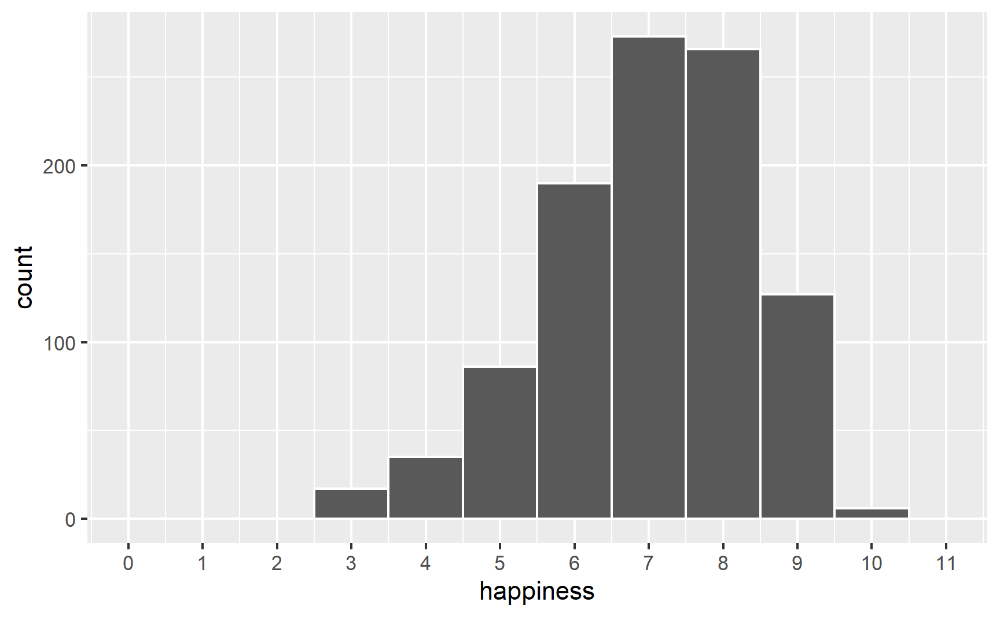
# Scaled up
ggplot(happiness_with_effect, aes(x = happiness_modified)) +
geom_histogram(binwidth = 1, color = "white") +
scale_x_continuous(breaks = 0:11) +
coord_cartesian(xlim = c(0, 11))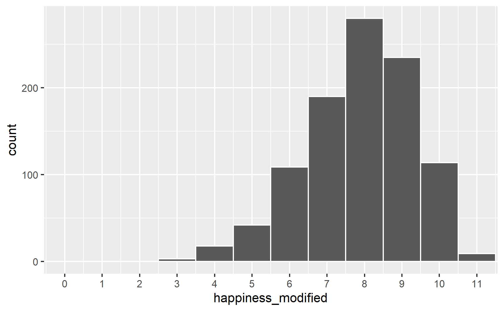
To fix that, we can use the rescale() function from the scales package to force the new happiness_modified variable to fit back in its original range:
happiness_with_effect <- happiness_with_effect %>%
mutate(happiness_rescaled = rescale(happiness_modified, to = c(3, 10)))
ggplot(happiness_with_effect, aes(x = happiness_rescaled)) +
geom_histogram(binwidth = 1, color = "white") +
scale_x_continuous(breaks = 0:11) +
coord_cartesian(xlim = c(0, 11))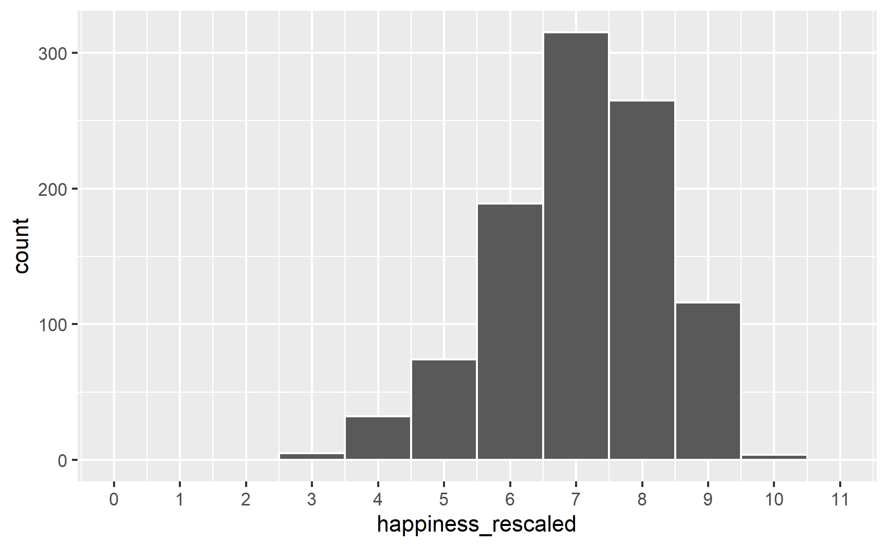
Everything is back in the 3–10 range now. However, the rescaling also rescaled our built-in effects. Look what happens if we use the happiness_rescaled in the model:
model_happiness3 <- lm(happiness_rescaled ~ cookies + color_blue, data = happiness_with_effect)
tidy(model_happiness3)
## # A tibble: 3 × 5
## term estimate std.error statistic p.value
## <chr> <dbl> <dbl> <dbl> <dbl>
## 1 (Intercept) 6.34 0.0910 69.6 0
## 2 cookies 0.208 0.0362 5.76 1.13e- 8
## 3 color_blueBlue 0.631 0.0744 8.48 8.25e-17Now the baseline happiness is 6.3, the cookies effect is 0.2, and the blue effect is 0.63. These effects shrunk because we shrunk the data back down to have a maximum of 10.
There are probably fancy mathy ways to rescale data and keep the coefficients the same size, but rather than figure that out (who even wants to do that?!), my strategy is just to play with numbers until the results look good. Instead of using a 0.25 cookie effect and 0.75 blue effect, I make those effects bigger so that the rescaled version is roughly what I really want. There’s no systematic way to do this—I ran this chunk below a bunch of times until the numbers worked.
set.seed(1234)
n_people <- 1000
happiness_real_effect <- tibble(
id = 1:n_people,
happiness_baseline = rbeta(n_people, shape1 = 7, shape2 = 3),
cookies = rpois(n_people, lambda = 1),
color_blue = sample(c("Blue", "Not blue"), n_people, replace = TRUE)
) %>%
# Adjust some of the columns
mutate(happiness_baseline = round(happiness_baseline * 10, 1),
cookies = cookies + 1,
color_blue = fct_relevel(factor(color_blue), "Not blue")) %>%
# Turn the categorical favorite color column into TRUE/FALSE so we can do math with it
mutate(color_blue_binary = ifelse(color_blue == "Blue", TRUE, FALSE)) %>%
# Make a new happiness column that uses coefficients for cookies and favorite color
mutate(happiness_effect = happiness_baseline +
(0.31 * cookies) + # Cookie effect
(0.91 * color_blue_binary)) %>% # Blue effect
# Rescale to 3-10, since that's what the original happiness column looked like
mutate(happiness = rescale(happiness_effect, to = c(3, 10)))
model_does_this_work_yet <- lm(happiness ~ cookies + color_blue, data = happiness_real_effect)
tidy(model_does_this_work_yet)
## # A tibble: 3 × 5
## term estimate std.error statistic p.value
## <chr> <dbl> <dbl> <dbl> <dbl>
## 1 (Intercept) 6.15 0.0886 69.4 0
## 2 cookies 0.253 0.0352 7.19 1.25e-12
## 3 color_blueBlue 0.749 0.0724 10.3 7.44e-24There’s nothing magical about the 0.31 and 0.91 numbers I used here; I just kept changing those to different things until the regression coefficients ended up at ≈0.25 and ≈0.75. Also, I gave up on trying to make the baseline happiness 7. It’s possible to do—you’d just need to also shift the underlying Beta distribution up (like shape1 = 9, shape2 = 2 or something). But then you’d also need to change the coefficients more. You’ll end up with 3 moving parts and it can get complicated, so I don’t worry too much about it, since what we care about the most here is the effect of cookies and favorite color, not baseline levels of happiness.
Phew. We successfully connected cookies and favorite color to happiness and we have effects that are measurable with regression! One last thing that I would do is get rid of some of the intermediate columns like color_blue_binary or happiness_effect—we only used those for the behind-the-scenes math of creating the effect. Here’s our final synthetic dataset:
happiness <- happiness_real_effect %>%
select(id, happiness, cookies, color_blue)
head(happiness)
## # A tibble: 6 × 4
## id happiness cookies color_blue
## <int> <dbl> <dbl> <fct>
## 1 1 8.81 2 Blue
## 2 2 6.20 2 Not blue
## 3 3 5.53 2 Blue
## 4 4 9.07 3 Not blue
## 5 5 5.68 1 Not blue
## 6 6 6.63 2 BlueWe can save that as a CSV file with write_csv():
write_csv(happiness, "data/happiness_fake_data.csv")In that cookie example, we assumed that both cookie consumption and favorite color are associated with happiness. We also assumed that cookie consumption and favorite color are not related to each other. But what if they are? What if people who like blue eat more cookies?
We’ve already used regression-based math to connect explanatory variables to outcome variables. We can use that same intuition to connect explanatory variables to each other.
The easiest way to think about this is with DAGs. Here’s the DAG for the model we just ran:
happiness_dag1 <- dagify(hap ~ cook + blue,
coords = list(x = c(hap = 3, cook = 1, blue = 2),
y = c(hap = 1, cook = 1, blue = 2)))
ggdag(happiness_dag1) +
theme_dag()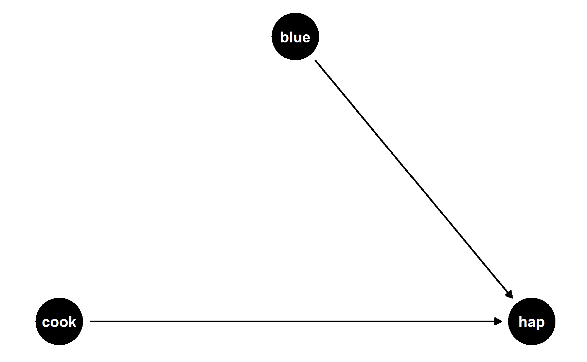
Both cookies and favorite color cause happiness, but there’s no link between them. Notice that dagify() uses the same model syntax that lm() does: hap ~ cook + blue. If we think of this just like a regression model, we can pretend that there are coefficients there too: hap ~ 0.25*cook + 0.75*blue. We don’t actually include any coefficients in the DAG or anything, but it helps with the intuition.
But what if people who like blue eat more cookies on average? For whatever reason, let’s pretend that liking blue causes you to eat 0.5 more cookies, on average. Here’s the new DAG:
happiness_dag2 <- dagify(hap ~ cook + blue,
cook ~ blue,
coords = list(x = c(hap = 3, cook = 1, blue = 2),
y = c(hap = 1, cook = 1, blue = 2)))
ggdag(happiness_dag2) +
theme_dag()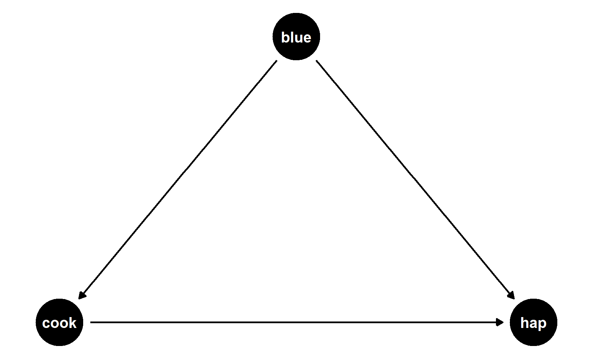
Now we have two different equations: hap ~ cook + blue and cook ~ blue. Conveniently, these both translate to models, and we know the coefficients we want!
hap ~ 0.25*cook + 0.75*blue: This is what we built before—cookies boost happiness by 0.25 and liking blue boosts happiness by 0.75cook ~ 0.3*blue: This is what we just proposed—liking blue boosts cookies by 0.5We can follow the same process we did when building the cookie and blue effects into happiness to also build a blue effect into cookies!
set.seed(1234)
n_people <- 1000
happiness_cookies_blue <- tibble(
id = 1:n_people,
happiness_baseline = rbeta(n_people, shape1 = 7, shape2 = 3),
cookies = rpois(n_people, lambda = 1),
color_blue = sample(c("Blue", "Not blue"), n_people, replace = TRUE)
) %>%
# Adjust some of the columns
mutate(happiness_baseline = round(happiness_baseline * 10, 1),
cookies = cookies + 1,
color_blue = fct_relevel(factor(color_blue), "Not blue")) %>%
# Turn the categorical favorite color column into TRUE/FALSE so we can do math with it
mutate(color_blue_binary = ifelse(color_blue == "Blue", TRUE, FALSE)) %>%
# Make blue have an effect on cookie consumption
mutate(cookies = cookies + (0.5 * color_blue_binary)) %>%
# Make a new happiness column that uses coefficients for cookies and favorite color
mutate(happiness_effect = happiness_baseline +
(0.31 * cookies) + # Cookie effect
(0.91 * color_blue_binary)) %>% # Blue effect
# Rescale to 3-10, since that's what the original happiness column looked like
mutate(happiness = rescale(happiness_effect, to = c(3, 10)))
head(happiness_cookies_blue)
## # A tibble: 6 × 7
## id happiness_baseline cookies color_blue color_blue_binary happiness_effect happiness
## <int> <dbl> <dbl> <fct> <lgl> <dbl> <dbl>
## 1 1 8.7 2.5 Blue TRUE 10.4 8.84
## 2 2 6.5 2 Not blue FALSE 7.12 6.14
## 3 3 4.8 2.5 Blue TRUE 6.48 5.61
## 4 4 9.6 3 Not blue FALSE 10.5 8.96
## 5 5 6.2 1 Not blue FALSE 6.51 5.63
## 6 6 6.1 2.5 Blue TRUE 7.78 6.69Notice now that people who like blue eat partial cookies, as expected. We can verify that there’s a relationship between liking blue and cookies by running a model:
lm(cookies ~ color_blue, data = happiness_cookies_blue) %>%
tidy()
## # A tibble: 2 × 5
## term estimate std.error statistic p.value
## <chr> <dbl> <dbl> <dbl> <dbl>
## 1 (Intercept) 2.07 0.0451 45.9 3.51e-248
## 2 color_blueBlue 0.460 0.0651 7.07 2.96e- 12Yep. Liking blue is associated with 0.46 more cookies on average (it’s not quite 0.5, but that’s because of randomness).
Now let’s do some neat DAG magic. Let’s say we’re interested in the causal effect of cookies on happiness. We could run a naive model:
model_happiness_naive <- lm(happiness ~ cookies, data = happiness_cookies_blue)
tidy(model_happiness_naive)
## # A tibble: 2 × 5
## term estimate std.error statistic p.value
## <chr> <dbl> <dbl> <dbl> <dbl>
## 1 (Intercept) 6.27 0.0894 70.1 0
## 2 cookies 0.325 0.0354 9.18 2.40e-19Based on this, eating a cookie causes you to have 0.325 more happiness points. But that’s wrong! Liking the color blue is a confounder and opens a path between cookies and happiness. You can see the confounding both in the DAG (since blue points to both the cookie node and the happiness node) and in the math (liking blue boosts happiness + liking blue boosts cookie consumption, which boosts happiness).
To fix this confounding, we need to statistically adjust for liking blue and close the backdoor path. Ordinarily we’d do this with something like matching or inverse probability weighting, but here we can just include liking blue as a control variable (since it’s linearly related to both cookies and happiness):
model_happiness_ate <- lm(happiness ~ cookies + color_blue, data = happiness_cookies_blue)
tidy(model_happiness_ate)
## # A tibble: 3 × 5
## term estimate std.error statistic p.value
## <chr> <dbl> <dbl> <dbl> <dbl>
## 1 (Intercept) 6.09 0.0870 70.0 0
## 2 cookies 0.249 0.0346 7.19 1.25e-12
## 3 color_blueBlue 0.739 0.0729 10.1 4.70e-23After adjusting for backdoor confounding, eating one additional cookie causes a 0.249 point increase in happiness. This is the effect we originally built into the data!
If you wanted, we could rescale the number of cookies just like we rescaled happiness before, since sometimes adding effects to columns changes their reasonable ranges.
Now that we have a good working dataset, we can keep the columns we care about and save it as a CSV file for later use:
happiness <- happiness_cookies_blue %>%
select(id, happiness, cookies, color_blue)
head(happiness)
## # A tibble: 6 × 4
## id happiness cookies color_blue
## <int> <dbl> <dbl> <fct>
## 1 1 8.84 2.5 Blue
## 2 2 6.14 2 Not blue
## 3 3 5.61 2.5 Blue
## 4 4 8.96 3 Not blue
## 5 5 5.63 1 Not blue
## 6 6 6.69 2.5 Bluewrite_csv(happiness, "data/happiness_fake_data.csv")We’ve got columns that follow specific distributions, and we’ve got columns that are statistically related to each other. We can add one more wrinkle to make our fake data even more fun (and even more reflective of real life). We can add some noise.
Right now, the effects we’re finding are too perfect. When we used mutate() to add a 0.25 boost in happiness for every cookie people ate, we added exactly 0.25 happiness points. If someone ate 2 cookies, they got 0.5 more happiness; if they ate 5, they got 1.25 more.
What if the cookie effect isn’t exactly 0.25, but somewhere around 0.25? For some people it’s 0.1, for others it’s 0.3, for others it’s 0.22. We can use the same ideas we talked about in the random numbers example to generate a distribution of an effect. For instance, let’s say that the average cookie effect is 0.25, but it can vary somewhat with a standard deviation of 0.15:
temp_data <- tibble(x = rnorm(10000, mean = 0.25, sd = 0.15))
ggplot(temp_data, aes(x = x)) +
geom_histogram(binwidth = 0.05, boundary = 0, color = "white")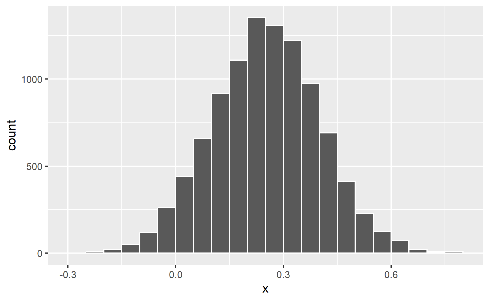
Sometimes it can go as low as −0.25; sometimes it can go as high as 0.75; normally it’s around 0.25.
Nothing in the model explains why it’s higher or lower for some people—it’s just random noise. Remember that the model accounts for that! This random variation is what the \(\varepsilon\) is for in this model equation:
\[ \text{Happiness} = \beta_0 + \beta_1 \text{Cookies eaten} + \beta_2 \text{Favorite color is blue} + \varepsilon \]
We can build that uncertainty into the fake column! Instead of using 0.31 * cookies when generating happiness (which is technically 0.25, but shifted up to account for rescaling happiness back down after), we’ll make a column for the cookie effect and then multiply that by the number of cookies.
set.seed(1234)
n_people <- 1000
happiness_cookies_noisier <- tibble(
id = 1:n_people,
happiness_baseline = rbeta(n_people, shape1 = 7, shape2 = 3),
cookies = rpois(n_people, lambda = 1),
cookie_effect = rnorm(n_people, mean = 0.31, sd = 0.2),
color_blue = sample(c("Blue", "Not blue"), n_people, replace = TRUE)
) %>%
# Adjust some of the columns
mutate(happiness_baseline = round(happiness_baseline * 10, 1),
cookies = cookies + 1,
color_blue = fct_relevel(factor(color_blue), "Not blue")) %>%
# Turn the categorical favorite color column into TRUE/FALSE so we can do math with it
mutate(color_blue_binary = ifelse(color_blue == "Blue", TRUE, FALSE)) %>%
# Make blue have an effect on cookie consumption
mutate(cookies = cookies + (0.5 * color_blue_binary)) %>%
# Make a new happiness column that uses coefficients for cookies and favorite
# color. Importantly, instead of using 0.31 * cookies, we'll use the random
# cookie effect we generated earlier
mutate(happiness_effect = happiness_baseline +
(cookie_effect * cookies) +
(0.91 * color_blue_binary)) %>%
# Rescale to 3-10, since that's what the original happiness column looked like
mutate(happiness = rescale(happiness_effect, to = c(3, 10)))
head(happiness_cookies_noisier)
## # A tibble: 6 × 8
## id happiness_baseline cookies cookie_effect color_blue color_blue_binary happiness_effect happiness
## <int> <dbl> <dbl> <dbl> <fct> <lgl> <dbl> <dbl>
## 1 1 8.7 2.5 0.124 Blue TRUE 9.92 8.16
## 2 2 6.5 2.5 0.370 Blue TRUE 8.34 7.02
## 3 3 4.8 2.5 0.326 Blue TRUE 6.53 5.72
## 4 4 9.6 3.5 0.559 Blue TRUE 12.5 9.98
## 5 5 6.2 1.5 0.0631 Blue TRUE 7.20 6.21
## 6 6 6.1 2 0.222 Not blue FALSE 6.54 5.73Now let’s look at the cookie effect in this noisier data:
model_noisier <- lm(happiness ~ cookies + color_blue, data = happiness_cookies_noisier)
tidy(model_noisier)
## # A tibble: 3 × 5
## term estimate std.error statistic p.value
## <chr> <dbl> <dbl> <dbl> <dbl>
## 1 (Intercept) 6.11 0.0779 78.4 0
## 2 cookies 0.213 0.0314 6.79 1.92e-11
## 3 color_blueBlue 0.650 0.0671 9.68 3.01e-21The effect is a little smaller now because of the extra noise, so we’d need to mess with the 0.31 and 0.91 coefficients more to get those numbers back up to 0.25 and 0.75.
While this didn’t influence the findings too much here, it can have consequences for other variables. For instance, in the previous section we said that the color blue influences cookie consumption. If the blue effect on cookies isn’t precisely 0.5 but follows some sort of distribution (sometimes small, sometimes big, sometimes negative, sometimes zero), that will influence cookies differently. That random effect on cookie consumption will then work together with the random effect of cookies on happiness, resulting in multiple varied values.
For instance, imagine the average effect of liking blue on cookies is 0.5, and the average effect of cookies on happiness is 0.25. For one person, their blue-on-cookie effect might be 0.392, which changes the number of cookies they eat. Their cookie-on-happiness effect is 0.573, which changes their happiness. Both of those random effects work together to generate the final happiness.
If you want more realistic-looking synthetic data, it’s a good idea to add some random noise wherever you can.
Going through this process requires a ton of trial and error. You will change all sorts of numbers to make sure the relationships you’re building work. This is especially the case if you rescale things, since that rescales your effects. There are a lot of moving parts and this is a complicated process.
You’ll run your data generation chunks lots and lots and lots of times, tinkering with the numbers as you go. This example makes it look easy, since it’s the final product, but I ran all these chunks over and over again until I got the causal effect and relationships just right.
It’s best if you also create plots and models to see what the relationships look like
We covered a bunch of distributions in the random number generation example, but it’s hard to think about what a standard deviation of 2 vs 10 looks like, or what happens when you mess with the shape parameters in a Beta distribution.
It’s best to visualize these variables. You could build the variable into your official dataset and then look at it, but I find it’s often faster to just look at what a general distribution looks like first. The easiest way to do this is generate a dataset with just one column in it and look at it, either with a histogram or a density plot.
For instance, what does a Beta distribution with shape1 = 3 and shape2 = 16 look like? The math says it should peak around 0.15ish (\(\frac{3}{3 + 16}\)), and that looks like the case:
temp_data <- tibble(x = rbeta(10000, shape1 = 3, shape2 = 16))
plot1 <- ggplot(temp_data, aes(x = x)) +
geom_histogram(binwidth = 0.05, boundary = 0, color = "white")
plot2 <- ggplot(temp_data, aes(x = x)) +
geom_density()
plot1 + plot2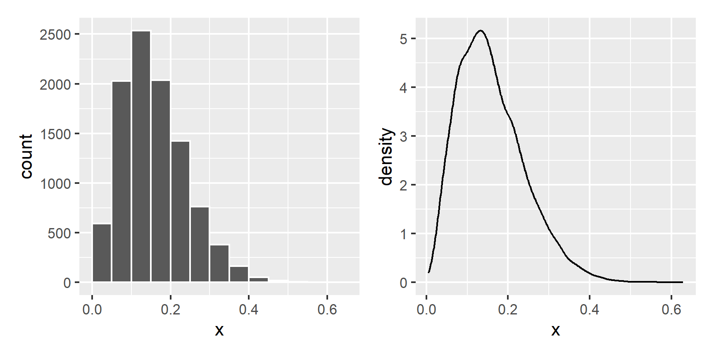
What if we want a normal distribution centered around 100, with most values range from 50 to 150. That’s range of ±50, but that doesn’t mean the sd will be 50—it’ll be much smaller than that, like 25ish. Tinker with the numbers until it looks right.
temp_data <- tibble(x = rnorm(10000, mean = 100, sd = 25))
plot1 <- ggplot(temp_data, aes(x = x)) +
geom_histogram(binwidth = 10, boundary = 0, color = "white")
plot2 <- ggplot(temp_data, aes(x = x)) +
geom_density()
plot1 + plot2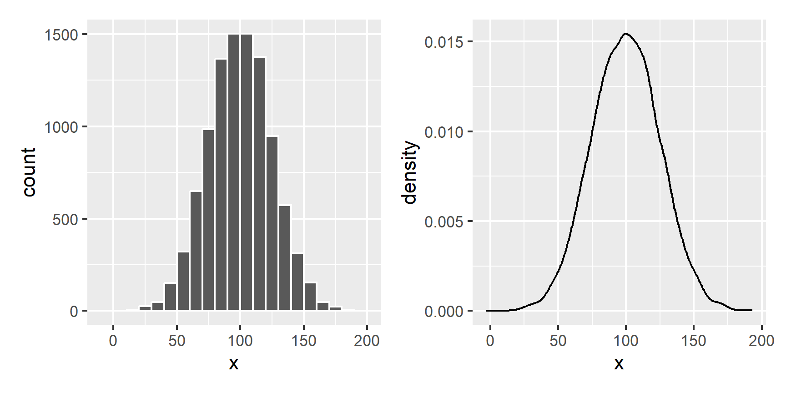
If you have two continuous/numeric columns, it’s best to use a scatterplot. For instance, let’s make two columns based on the Beta and normal distributions above, and we’ll make it so that y goes up by 0.25 for every increase in x, along with some noise:
set.seed(1234)
temp_data <- tibble(
x = rnorm(1000, mean = 100, sd = 25)
) %>%
mutate(y = rbeta(1000, shape1 = 3, shape2 = 16) + # Baseline distribution
(0.25 * x) + # Effect of x
rnorm(1000, mean = 0, sd = 10)) # Add some noise
ggplot(temp_data, aes(x = x, y = y)) +
geom_point() +
geom_smooth(method = "lm")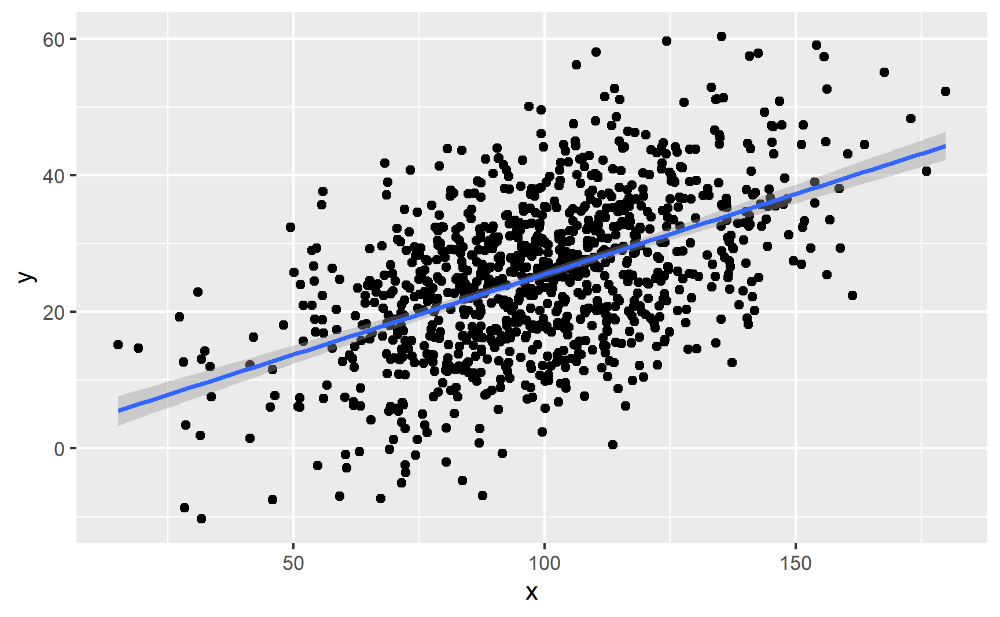
We can confirm the effect with a model:
lm(y ~ x, data = temp_data) %>%
tidy()
## # A tibble: 2 × 5
## term estimate std.error statistic p.value
## <chr> <dbl> <dbl> <dbl> <dbl>
## 1 (Intercept) 1.98 1.28 1.54 1.24e- 1
## 2 x 0.235 0.0125 18.8 1.49e-67If you have one binary column and one continuous/numeric column, it’s generally best to not use a scatterplot. Instead, either look at the distribution of the continuous variable across the binary variable with a faceted histogram or overlaid density plot, or look at the average of the continuous variable across the different values of the binary variable with a point range.
Let’s make two columns: a continuous outcome (y) and a binary treatment (x). Being in the treatment group causes an increase of 20 points, on average.
set.seed(1234)
temp_data <- tibble(
treatment = rbinom(1000, size = 1, prob = 0.5) # Make 1000 0/1 values with 50% chance of each
) %>%
mutate(outcome = rbeta(1000, shape1 = 3, shape2 = 16) + # Baseline distribution
(20 * treatment) + # Effect of treatment
rnorm(1000, mean = 0, sd = 20)) %>% # Add some noise
mutate(treatment = factor(treatment)) # Make treatment a factor/categorical variableWe can check the numbers with a model:
lm(outcome ~ treatment, data = temp_data) %>% tidy()
## # A tibble: 2 × 5
## term estimate std.error statistic p.value
## <chr> <dbl> <dbl> <dbl> <dbl>
## 1 (Intercept) 0.244 0.935 0.261 7.94e- 1
## 2 treatment1 20.9 1.30 16.1 4.70e-52Here’s what that looks like as a histogram:
ggplot(temp_data, aes(x = outcome, fill = treatment)) +
geom_histogram(binwidth = 5, color = "white", boundary = 0) +
guides(fill = "none") + # Turn off the fill legend since it's redundant
facet_wrap(vars(treatment), ncol = 1)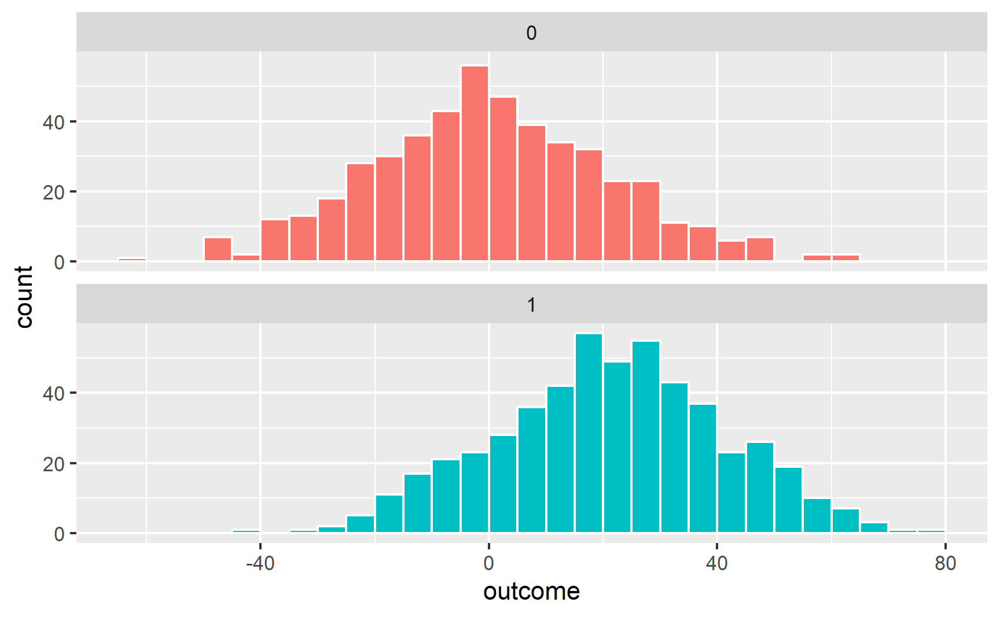
And as overlapping densities:
ggplot(temp_data, aes(x = outcome, fill = treatment)) +
geom_density(alpha = 0.5)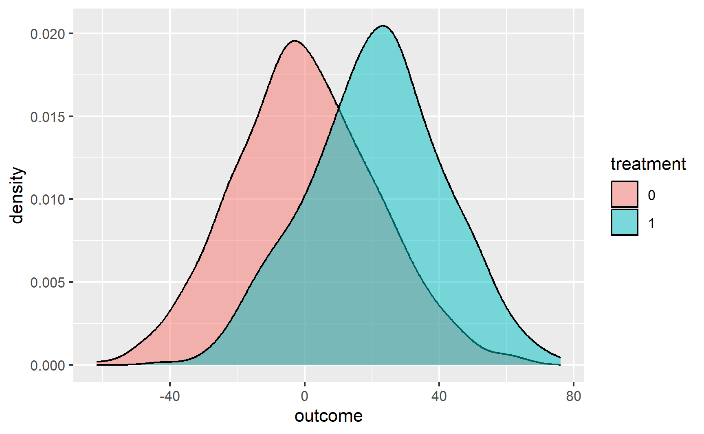
And with a point range:
# hahaha these error bars are tiny
ggplot(temp_data, aes(x = treatment, y = outcome, color = treatment)) +
stat_summary(geom = "pointrange", fun.data = "mean_se") +
guides(color = "none") # Turn off the color legend since it's redundant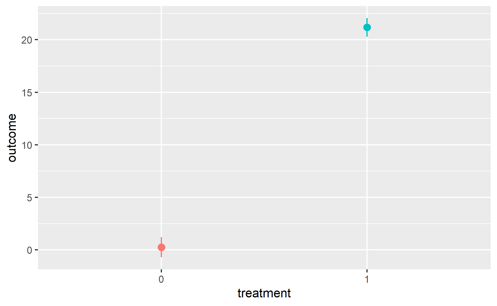
Those previous sections go into a lot of detail. In general, here’s the process you should follow when building relationships in synthetic data:
Draw a DAG that maps out how all the columns you care about are related.
Here’s a simple DAG that shows the causal effect of mosquito net usage on malaria risk. Income and health both influence and confound net use and malaria risk, and income also influences health.
mosquito_dag <- dagify(mal ~ net + inc + hlth,
net ~ inc + hlth,
hlth ~ inc,
coords = list(x = c(mal = 4, net = 1, inc = 2, hlth = 3),
y = c(mal = 1, net = 1, inc = 2, hlth = 2)))
ggdag(mosquito_dag) +
theme_dag()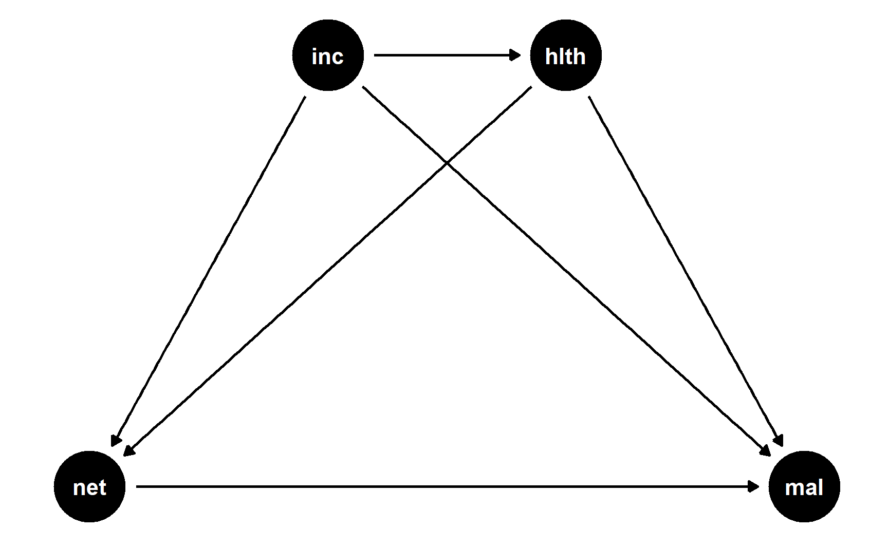
Specify how those nodes are measured.
For the sake of this example, we’ll measure these nodes like so. See the random number example for more details about the distributions.
Malaria risk: scale from 0–100, mostly around 40, but ranging from 10ish to 80ish. Best to use a Beta distribution.
Net use: binary 0/1, TRUE/FALSE variable, where 50% of people use nets. Best to use a binomial distribution. However, since we want to use other variables that increase the likelihood of using a net, we’ll do some cool tricky stuff, explained later.
Income: weekly income, measured in dollars, mostly around 500 ± 300. Best to use a normal distribution.
Health: scale from 0–100, mostly around 70, but ranging from 50ish to 100. Best to use a Beta distribution.
Specify the relationships between the nodes based on the DAG equations.
There are three models in this DAG:
hlth ~ inc: Income influences health. We’ll assume that every 10 dollars/week is associated with a 1 point increase in health (so a 1 dollar incrrease is associated with a 0.02 point increase in health)
net ~ inc + hlth: Income and health both increase the probability of net usage. This is where we do some cool tricky stuff.
Both income and health have an effect on the probability of bed net use, but bed net use is measured as a 0/1, TRUE/FALSE variable. If we run a regression with net as the outcome, we can’t really interpret the coefficients like “a 1 point increase in health is associated with a 0.42 point increase in bed net being TRUE.” That doesn’t even make sense.
Ordinarily, when working with binary outcome variables, you use logistic regression models (see the crash course we had when talking about propensity scores here). In this kind of regression, the coefficients in the model represent changes in the log odds of using a net. As we discuss in the crash course section, log odds are typically impossible to interpet. If you exponentiate them, you get odds ratios, which let you say things like “a 1 point increase in health is associated with a 15% increase in the likelihood of using a net.” Technically we could include coefficients for a logistic regression model and simulate probabilities of using a net or not using log odds and odds ratios (and that’s what I do in the rain barrel data from Problem Set 3 (see code here)), but that’s really hard to wrap your head around since you’re dealing with strange uninterpretable coefficients. So we won’t do that here.
Instead, we’ll do some fun trickery. We’ll create something called a “bed net score” that gets bigger as income and health increase. We’ll say that a 1 point increase in health score is associated with a 1.5 point increase in bed net score, and a 1 dollar increase in income is associated with a 0.5 point increase in bed net score. This results in a column that ranges all over the place, from 200 to 500 (in this case; that won’t always be true). This column definitely doesn’t look like a TRUE/FALSE binary column—it’s just a bunch of numbers. That’s okay!
We’ll then use the rescale() function from the scales package to take this bed net score and scale it down so that it goes from 0.05 to 0.95. This represents a person’s probability of using a bed net.
Finally, we’ll use that probability in the rbinom() function to generate a 0 or 1 for each person. Some people will have a high probability because of their income and health, like 0.9, and will most likely use a net. Some people might have a 0.15 probability and will likely not use a net.
When you generate binary variables like this, it’s hard to know the exact effect you’ll get, so it’s best to tinker with the numbers until you see relationships that you want.
mal ~ net + inc + hlth: Finally net use, income, and health all have an effect on the risk of malaria. Building this relationship is easy since it’s just a regular linear regression model (since malaria risk is not binary). We’ll say that a 1 dollar increase in income is associated with a decrease in risk, a 1 point increase in health is associated with a decrease in risk, and using a net is associated with a 15 point decrease in risk. That’s the casual effect we’re building in to the DAG.
Generate random columns that stand alone. Generate related columns using regression math. Consider adding random noise. This is an entirely trial and error process until you get numbers that look good. Rely heavily on plots as you try different coefficients and parameters. Optionally rescale any columns that go out of reasonable bounds. If you rescale, you’ll need to tinker with the coefficients you used since the final effects will also get rescaled.
Here we go! Let’s make some data. I’ll comment the code below so you can see what’s happening at each step.
# Make this randomness consistent
set.seed(1234)
# Simulate 1138 people (just for fun)
n_people <- 1138
net_data <- tibble(
# Make an ID column (not necessary, but nice to have)
id = 1:n_people,
# Generate income variable: normal, 500 ± 300
income = rnorm(n_people, mean = 500, sd = 75)
) %>%
# Generate health variable: beta, centered around 70ish
mutate(health_base = rbeta(n_people, shape1 = 7, shape2 = 4) * 100,
# Health increases by 0.02 for every dollar in income
health_income_effect = income * 0.02,
# Make the final health score and add some noise
health = health_base + health_income_effect + rnorm(n_people, mean = 0, sd = 3),
# Rescale so it doesn't go above 100
health = rescale(health, to = c(min(health), 100))) %>%
# Generate net variable based on income, health, and random noise
mutate(net_score = (0.5 * income) + (1.5 * health) + rnorm(n_people, mean = 0, sd = 15),
# Scale net score down to 0.05 to 0.95 to create a probability of using a net
net_probability = rescale(net_score, to = c(0.05, 0.95)),
# Randomly generate a 0/1 variable using that probability
net = rbinom(n_people, 1, net_probability)) %>%
# Finally generate a malaria risk variable based on income, health, net use,
# and random noise
mutate(malaria_risk_base = rbeta(n_people, shape1 = 4, shape2 = 5) * 100,
# Risk goes down by 10 when using a net. Because we rescale things,
# though, we have to make the effect a lot bigger here so it scales
# down to -10. Risk also decreases as health and income go up. I played
# with these numbers until they created reasonable coefficients.
malaria_effect = (-30 * net) + (-1.9 * health) + (-0.1 * income),
# Make the final malaria risk score and add some noise
malaria_risk = malaria_risk_base + malaria_effect + rnorm(n_people, 0, sd = 3),
# Rescale so it doesn't go below 0,
malaria_risk = rescale(malaria_risk, to = c(5, 70)))
# Look at all these columns!
head(net_data)
## # A tibble: 6 × 11
## id income health_base health_income_effect health net_score net_probability net malaria_risk_base malaria_effect malaria_risk
## <int> <dbl> <dbl> <dbl> <dbl> <dbl> <dbl> <int> <dbl> <dbl> <dbl>
## 1 1 409. 61.2 8.19 63.1 301. 0.369 0 37.9 -161. 45.1
## 2 2 521. 83.9 10.4 83.5 409. 0.684 1 55.0 -241. 23.4
## 3 3 581. 64.6 11.6 73.0 426. 0.735 0 53.0 -197. 36.5
## 4 4 324. 62.0 6.48 60.6 255. 0.235 0 68.4 -148. 58.7
## 5 5 532. 69.2 10.6 73.4 373. 0.578 1 63.2 -223. 32.7
## 6 6 538. 36.6 10.8 42.6 295. 0.351 0 38.6 -135. 52.5Verify all relationships with plots and models.
Let’s see if we have the relationships we want. Income looks like it’s associated with health:
ggplot(net_data, aes(x = income, y = health)) +
geom_point() +
geom_smooth(method = "lm")
lm(health ~ income, data = net_data) %>% tidy()
## # A tibble: 2 × 5
## term estimate std.error statistic p.value
## <chr> <dbl> <dbl> <dbl> <dbl>
## 1 (Intercept) 59.1 2.54 23.3 2.24e-98
## 2 income 0.0169 0.00504 3.36 8.15e- 4It looks like richer and healthier people are more likely to use nets:
net_income <- ggplot(net_data, aes(x = income, fill = as.factor(net))) +
geom_density(alpha = 0.7) +
theme(legend.position = "bottom")
net_health <- ggplot(net_data, aes(x = health, fill = as.factor(net))) +
geom_density(alpha = 0.7) +
theme(legend.position = "bottom")
net_income + net_health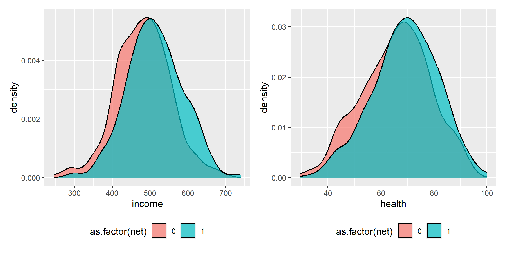
Income increasing makes it 1% more likely to use a net; health increasing make it 2% more likely to use a net:
glm(net ~ income + health, family = binomial(link = "logit"), data = net_data) %>%
tidy(exponentiate = TRUE)
## # A tibble: 3 × 5
## term estimate std.error statistic p.value
## <chr> <dbl> <dbl> <dbl> <dbl>
## 1 (Intercept) 0.0186 0.532 -7.49 6.64e-14
## 2 income 1.01 0.000864 6.47 9.93e-11
## 3 health 1.02 0.00491 3.89 9.92e- 5Try it out!
Is the effect in there? Let’s try finding it by controlling for our two backdoors: health and income. Ordinarily we should do something like matching or inverse probability weighting, but we’ll just do regular regression here (which is okay-ish, since all these variables are indeed linearly related with each other—we made them that way!)
If we just look at the effect of nets on malaria risk without any statistical adjustment, we see that net cause a decrease of 13 points in malaria risk. This is wrong though becuase there’s confounding.
# Wrong correlation-is-not-causation effect
model_net_naive <- lm(malaria_risk ~ net, data = net_data)
tidy(model_net_naive)
## # A tibble: 2 × 5
## term estimate std.error statistic p.value
## <chr> <dbl> <dbl> <dbl> <dbl>
## 1 (Intercept) 41.9 0.413 102. 0
## 2 net -13.6 0.572 -23.7 2.90e-101If we control for the confounders, we get the 10 point ATE. It works!
# Correctly adjusted ATE effect
model_net_ate <- lm(malaria_risk ~ net + health + income, data = net_data)
tidy(model_net_ate)
## # A tibble: 4 × 5
## term estimate std.error statistic p.value
## <chr> <dbl> <dbl> <dbl> <dbl>
## 1 (Intercept) 97.3 1.28 76.1 0
## 2 net -10.5 0.317 -33.2 1.32e-169
## 3 health -0.608 0.0123 -49.4 1.25e-284
## 4 income -0.0320 0.00213 -15.0 1.20e- 46Save the data.
Since it works, let’s save it:
# In the end, all we need is id, income, health, net, and malaria risk:
net_data_final <- net_data %>%
select(id, income, health, net, malaria_risk)
head(net_data_final)
## # A tibble: 6 × 5
## id income health net malaria_risk
## <int> <dbl> <dbl> <int> <dbl>
## 1 1 409. 63.1 0 45.1
## 2 2 521. 83.5 1 23.4
## 3 3 581. 73.0 0 36.5
## 4 4 324. 60.6 0 58.7
## 5 5 532. 73.4 1 32.7
## 6 6 538. 42.6 0 52.5# Save it as a CSV file
write_csv(net_data_final, "data/bed_nets.csv")Generating data for a full complete observational DAG like the example above is complicated and hard. These other forms of causal inference are design-based (i.e. tied to specific contexts like before/after treatment/control or arbitrary cutoffs) instead of model-based, so they’re actually a lot easier to simulate! So don’t be scared away yet!
Draw a DAG that maps out how all the columns you care about are related.
RCTs are great because they make DAGs really easy! In a well-randomized RCT, you get to delete all arrows going into the treatment node in a DAG. We’ll stick with the same mosquito net situation we just used, but make it randomized:
rct_dag <- dagify(mal ~ net + inc + hlth,
hlth ~ inc,
coords = list(x = c(mal = 4, net = 1, inc = 2, hlth = 3),
y = c(mal = 1, net = 1, inc = 2, hlth = 2)))
ggdag(rct_dag) +
theme_dag()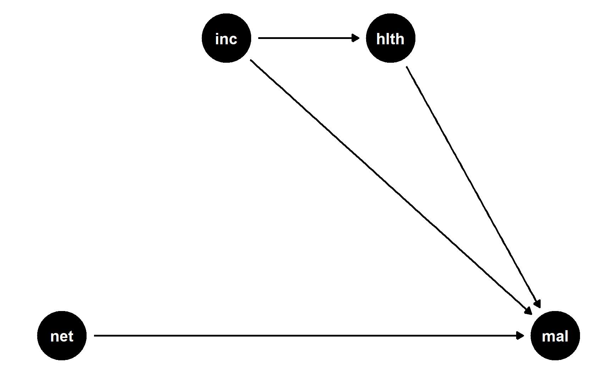
Specify how those nodes are measured.
We’ll measure these nodes the same way as before:
Malaria risk: scale from 0–100, mostly around 40, but ranging from 10ish to 80ish. Best to use a Beta distribution.
Net use: binary 0/1, TRUE/FALSE variable, where 50% of people use nets. Best to use a binomial distribution.
Income: weekly income, measured in dollars, mostly around 500 ± 300. Best to use a normal distribution.
Health: scale from 0–100, mostly around 70, but ranging from 50ish to 100. Best to use a Beta distribution.
Specify the relationships between the nodes based on the DAG equations.
This is where RCTs are great. Because we removed all the arrows going into net, we don’t need to build any relationships that influence net use. Net use is randomized! We don’t need to make strange “bed net scores” and give people boosts according to income or health or anything. There are only two models in this DAG:
hlth ~ inc: Income influences health. We’ll assume that every 10 dollars/week is associated with a 1 point increase in health (so a 1 dollar incrrease is associated with a 0.02 point increase in health)
mal ~ net + inc + hlth: Net use, income, and health all have an effect on the risk of malaria. We’ll say that a 1 dollar increase in income is associated with a decrease in risk, a 1 point increase in health is associated with a decrease in risk, and using a net is associated with a 15 point decrease in risk. That’s the casual effect we’re building in to the DAG.
Generate random columns that stand alone. Generate related columns using regression math. Consider adding random noise. This is an entirely trial and error process until you get numbers that look good. Rely heavily on plots as you try different coefficients and parameters. Optionally rescale any columns that go out of reasonable bounds. If you rescale, you’ll need to tinker with the coefficients you used since the final effects will also get rescaled.
Let’s make this data. It’ll be a lot easier than the full DAG we did before. Again, I’ll comment the code below so you can see what’s happening at each step.
# Make this randomness consistent
set.seed(1234)
# Simulate 793 people (just for fun)
n_people <- 793
rct_data <- tibble(
# Make an ID column (not necessary, but nice to have)
id = 1:n_people,
# Generate income variable: normal, 500 ± 300
income = rnorm(n_people, mean = 500, sd = 75)
) %>%
# Generate health variable: beta, centered around 70ish
mutate(health_base = rbeta(n_people, shape1 = 7, shape2 = 4) * 100,
# Health increases by 0.02 for every dollar in income
health_income_effect = income * 0.02,
# Make the final health score and add some noise
health = health_base + health_income_effect + rnorm(n_people, mean = 0, sd = 3),
# Rescale so it doesn't go above 100
health = rescale(health, to = c(min(health), 100))) %>%
# Randomly assign people to use a net (this is nice and easy!)
mutate(net = rbinom(n_people, 1, 0.5)) %>%
# Finally generate a malaria risk variable based on income, health, net use,
# and random noise
mutate(malaria_risk_base = rbeta(n_people, shape1 = 4, shape2 = 5) * 100,
# Risk goes down by 10 when using a net. Because we rescale things,
# though, we have to make the effect a lot bigger here so it scales
# down to -10. Risk also decreases as health and income go up. I played
# with these numbers until they created reasonable coefficients.
malaria_effect = (-35 * net) + (-1.9 * health) + (-0.1 * income),
# Make the final malaria risk score and add some noise
malaria_risk = malaria_risk_base + malaria_effect + rnorm(n_people, 0, sd = 3),
# Rescale so it doesn't go below 0,
malaria_risk = rescale(malaria_risk, to = c(5, 70)))
# Look at all these columns!
head(rct_data)
## # A tibble: 6 × 9
## id income health_base health_income_effect health net malaria_risk_base malaria_effect malaria_risk
## <int> <dbl> <dbl> <dbl> <dbl> <int> <dbl> <dbl> <dbl>
## 1 1 409. 57.2 8.19 61.3 1 37.4 -192. 35.1
## 2 2 521. 63.3 10.4 69.4 0 33.0 -184. 37.6
## 3 3 581. 61.8 11.6 71.9 1 36.4 -230. 24.4
## 4 4 324. 42.2 6.48 45.5 1 52.7 -154. 52.8
## 5 5 532. 72.1 10.6 78.5 1 41.9 -237. 23.6
## 6 6 538. 82.0 10.8 89.1 0 46.6 -223. 29.9Verify all relationships with plots and models.
Income still looks like it’s associated with health (which isn’t surprising, since it’s the same code we used for the full DAG earlier):
ggplot(net_data, aes(x = income, y = health)) +
geom_point() +
geom_smooth(method = "lm")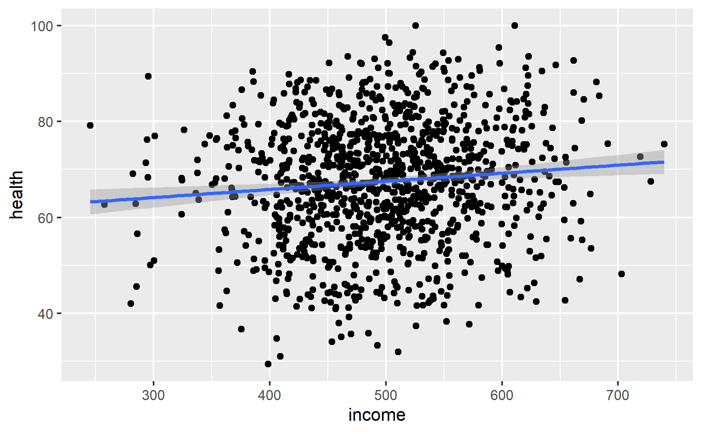
lm(health ~ income, data = net_data) %>% tidy()
## # A tibble: 2 × 5
## term estimate std.error statistic p.value
## <chr> <dbl> <dbl> <dbl> <dbl>
## 1 (Intercept) 59.1 2.54 23.3 2.24e-98
## 2 income 0.0169 0.00504 3.36 8.15e- 4Try it out!
Is the effect in there? With an RCT, all we really need to do is compare the outcome across treatment and control groups—because there’s no confounding, we don’t need to control for anything. Ordinarily we should check for balance across characteristics like health and income (and maybe generate other demographic columns) like we did in the RCT example, but we’ll skip all that here since we’re just checking to see if the effect is there.
It looks like using nets causes an average decrease of 10 risk points. Great!
# Correct RCT-based ATE
model_rct <- lm(malaria_risk ~ net, data = rct_data)
tidy(model_rct)
## # A tibble: 2 × 5
## term estimate std.error statistic p.value
## <chr> <dbl> <dbl> <dbl> <dbl>
## 1 (Intercept) 40.8 0.463 88.0 0
## 2 net -10.2 0.653 -15.7 2.22e-48Just for fun, if we control for health and income, we’ll get basically the same effect, since they don’t actualy confound the relationship and don’t really explain anything useful.
# Controlling for stuff even though we don't need to
model_rct_controls <- lm(malaria_risk ~ net + health + income, data = rct_data)
tidy(model_rct_controls)
## # A tibble: 4 × 5
## term estimate std.error statistic p.value
## <chr> <dbl> <dbl> <dbl> <dbl>
## 1 (Intercept) 97.7 1.45 67.3 0
## 2 net -10.8 0.344 -31.3 2.27e-140
## 3 health -0.586 0.0140 -41.8 1.67e-202
## 4 income -0.0310 0.00230 -13.5 1.75e- 37Save the data.
The data works, so let’s get rid of the intermediate columns we don’t need and save it as a CSV file.
# In the end, all we need is id, income, health, net, and malaria risk:
rct_data_final <- rct_data %>%
select(id, income, health, net, malaria_risk)
head(rct_data_final)
## # A tibble: 6 × 5
## id income health net malaria_risk
## <int> <dbl> <dbl> <int> <dbl>
## 1 1 409. 61.3 1 35.1
## 2 2 521. 69.4 0 37.6
## 3 3 581. 71.9 1 24.4
## 4 4 324. 45.5 1 52.8
## 5 5 532. 78.5 1 23.6
## 6 6 538. 89.1 0 29.9# Save it as a CSV file
write_csv(rct_data_final, "data/bed_nets_rct.csv")Draw a DAG that maps out how all the columns you care about are related.
Difference-in-differences approaches to causal inference are not based on models but on context or research design. You need comparable treatment and control groups before and after some policy or program is implemented.
We’ll keep with our mosquito net example and pretend that two cities in some country are dealing with malaria infections. City B rolls out a free net program in 2017; City A does not. Here’s what the DAG looks like:
did_dag <- dagify(mal ~ net + year + city,
net ~ year + city,
coords = list(x = c(mal = 3, net = 1, year = 2, city = 2),
y = c(mal = 2, net = 2, year = 3, city = 1)))
ggdag(did_dag) +
theme_dag()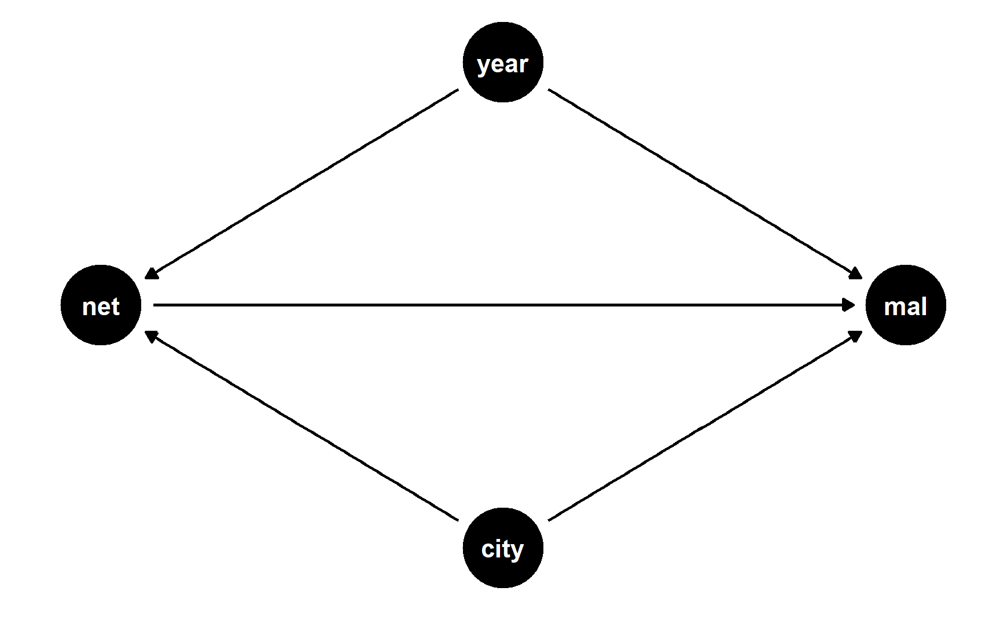
Specify how those nodes are measured.
Here’s how we’ll measure these nodes:
Malaria risk: scale from 0–100, mostly around 60, but ranging from 30ish to 90ish. Best to use a Beta distribution.
Net use: binary 0/1, TRUE/FALSE variable. This is technically binomial, but we don’t need to simulate it since it will only happen for people who are in the treatment city after the universal net rollout.
Year: year ranging from 2013 to 2020. Best to use a uniform distribution.
City: binary 0/1, City A/City B variable. Best to use a binomial distribution.
Specify the relationships between the nodes based on the DAG equations.
There are two models in the DAG:
net ~ year + city: Net use is determined by being in City B and being after 2017. We’ll assume perfect compliance here (but it’s fairly easy to simulate non-compliance and have some people in City A use nets after 2017, and some people in both cities use nets before 2017).
mal ~ net + year + city: Malaria risk is determined by net use, year, and city. It’s determined by lots of other things too (like we saw in the previous DAGs), but since we’re assuming that the two cities are comparable treatment and control groups, we don’t need to worry about things like health, income, age, etc.
We’ll pretend that in general, City B has historicallly had a problem with malaria and people there have had higher risk: being in City B increases malaria risk by 5 points, on average. Over time, both cities have worked on mosquito abatement, so average malaria risk has decreased by 2 points per year (in both cities, because we believe in parallel trends). Using a mosquito net causes a decrease of 10 points on average. That’s our causal effect.
Generate random columns that stand alone. Generate related columns using regression math. Consider adding random noise. This is an entirely trial and error process until you get numbers that look good. Rely heavily on plots as you try different coefficients and parameters. Optionally rescale any columns that go out of reasonable bounds. If you rescale, you’ll need to tinker with the coefficients you used since the final effects will also get rescaled.
Generation time! Heavily annotated code below:
# Make this randomness consistent
set.seed(1234)
# Simulate 2567 people (just for fun)
n_people <- 2567
did_data <- tibble(
# Make an ID column (not necessary, but nice to have)
id = 1:n_people,
# Generate year variable: uniform, between 2013 and 2020. Round so it's whole.
year = round(runif(n_people, min = 2013, max = 2020), 0),
# Generate city variable: binomial, 50% chance of being in a city. We'll use
# sample() instead of rbinom()
city = sample(c("City A", "City B"), n_people, replace = TRUE)
) %>%
# Generate net variable. We're assuming perfect compliance, so this will only
# be TRUE for people in City B after 2017
mutate(net = ifelse(city == "City B" & year > 2017, TRUE, FALSE)) %>%
# Generate a malaria risk variable based on year, city, net use, and random noise
mutate(malaria_risk_base = rbeta(n_people, shape1 = 6, shape2 = 3) * 100,
# Risk goes up if you're in City B because they have a worse problem.
# We could just say "city_effect = 5" and give everyone in City A an
# exact 5-point boost, but to add some noise, we'll give people an
# average boost using rnorm(). Some people might go up 7, some might go
# up 1, some might go down 2
city_effect = ifelse(city == "City B", rnorm(n_people, mean = 5, sd = 2), 0),
# Risk goes down by 2 points on average every year. Creating this
# effect with regression would work fine (-2 * year), except the years
# are huge here (-2 * 2013 and -2 * 2020, etc.) So first we create a
# smaller year column where 2013 is year 1, 2014 is year 2, and so on,
# that way we can say -2 * 1 and -2 * 6, or whatever.
# Also, rather than make risk go down by *exactly* 2 every year, we'll
# add some noise with rnorm(), so for some people it'll go down by 1 or
# 4 or up by 1, and so on
year_smaller = year - 2012,
year_effect = rnorm(n_people, mean = -2, sd = 0.1) * year_smaller,
# Using a net causes a decrease of 10 points, on average. Again, rather
# than use exactly 10, we'll use a distribution around 10. People only
# get a net boost if they're in City B after 2017.
net_effect = ifelse(city == "City B" & year > 2017,
rnorm(n_people, mean = -10, sd = 1.5),
0),
# Finally combine all these effects to create the malaria risk variable
malaria_risk = malaria_risk_base + city_effect + year_effect + net_effect,
# Rescale so it doesn't go below 0 or above 100
malaria_risk = rescale(malaria_risk, to = c(0, 100))) %>%
# Make an indicator variable showing if the row is after 2017
mutate(after = year > 2017)
head(did_data)
## # A tibble: 6 × 11
## id year city net malaria_risk_base city_effect year_smaller year_effect net_effect malaria_risk after
## <int> <dbl> <chr> <lgl> <dbl> <dbl> <dbl> <dbl> <dbl> <dbl> <lgl>
## 1 1 2014 City B FALSE 53.0 6.25 2 -3.97 0 54.2 FALSE
## 2 2 2017 City B FALSE 89.7 3.32 5 -9.17 0 84.1 FALSE
## 3 3 2017 City A FALSE 49.5 0 5 -10.1 0 37.6 FALSE
## 4 4 2017 City B FALSE 37.4 7.11 5 -9.44 0 33.1 FALSE
## 5 5 2019 City A FALSE 76.6 0 7 -14.7 0 61.1 TRUE
## 6 6 2017 City B FALSE 65.7 5.38 5 -10.4 0 59.9 FALSEVerify all relationships with plots and models.
Is risk higher in City B? Yep.
ggplot(did_data, aes(x = city, y = malaria_risk, color = city)) +
stat_summary(geom = "pointrange", fun.data = "mean_se") +
guides(color = "none")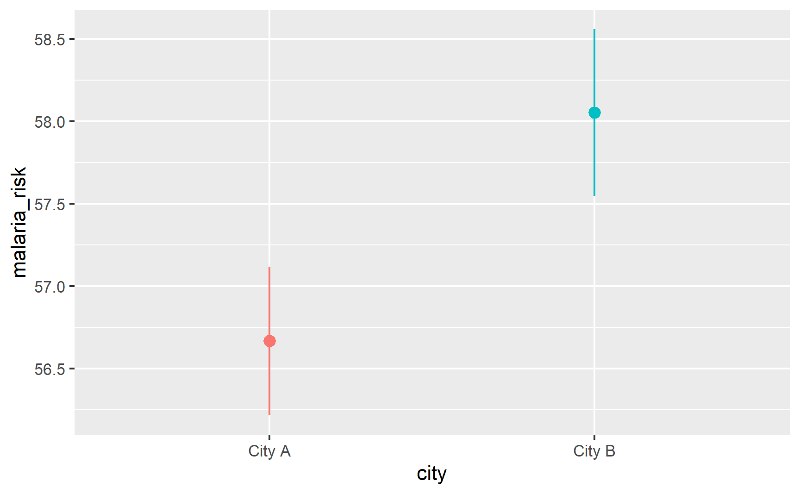
Does risk decrease over time? And are the trends parallel? There was a weird random spike in City B in 2017 for whatever reason, but in general, the trends in the two cities are pretty parallel from 2013 to 2017.
plot_data <- did_data %>%
group_by(year, city) %>%
summarize(mean_risk = mean(malaria_risk),
se_risk = sd(malaria_risk) / sqrt(n()),
upper = mean_risk + (1.96 * se_risk),
lower = mean_risk + (-1.96 * se_risk))
ggplot(plot_data, aes(x = year, y = mean_risk, color = city)) +
geom_vline(xintercept = 2017.5) +
geom_ribbon(aes(ymin = lower, ymax = upper, fill = city), alpha = 0.3, color = FALSE) +
geom_line() +
theme(legend.position = "bottom")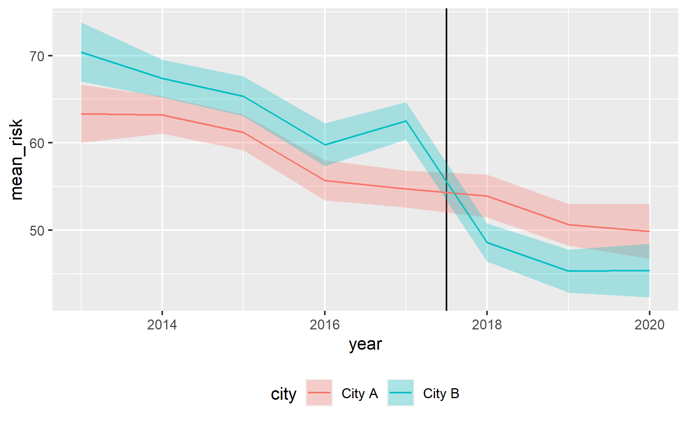
Try it out!
Let’s see if it works! For diff-in-diff we need to use this model:
\[ \text{Malaria risk} = \alpha + \beta\ \text{City B} + \gamma\ \text{After 2017} + \delta\ (\text{City B} \times \text{After 2017}) + \varepsilon \]
model_did <- lm(malaria_risk ~ city + after + city * after, data = did_data)
tidy(model_did)
## # A tibble: 4 × 5
## term estimate std.error statistic p.value
## <chr> <dbl> <dbl> <dbl> <dbl>
## 1 (Intercept) 59.2 0.549 108. 0
## 2 cityCity B 5.17 0.778 6.64 3.71e-11
## 3 afterTRUE -7.47 0.939 -7.96 2.61e-15
## 4 cityCity B:afterTRUE -10.2 1.32 -7.79 9.67e-15It works! Being in City B is associated with a 5-point higher risk on average; being after 2017 is associated with a 7.5-point lower risk on average, and being in City B after 2017 causes risk to drop by −10. The number isn’t exactly −10 here, since we rescaled the malaria_risk column a little, but still, it’s close. It’d probably be a good idea to build in some more noise and noncompliance, since the p-values are really really tiny here, but this is good enough for now.
Here’s an obligatory diff-in-diff visualization:
plot_data <- did_data %>%
group_by(after, city) %>%
summarize(mean_risk = mean(malaria_risk),
se_risk = sd(malaria_risk) / sqrt(n()),
upper = mean_risk + (1.96 * se_risk),
lower = mean_risk + (-1.96 * se_risk))
# Extract parts of the model results for adding annotations
model_results <- tidy(model_did)
before_treatment <- filter(model_results, term == "(Intercept)")$estimate +
filter(model_results, term == "cityCity B")$estimate
diff_diff <- filter(model_results, term == "cityCity B:afterTRUE")$estimate
after_treatment <- before_treatment + diff_diff +
filter(model_results, term == "afterTRUE")$estimate
ggplot(plot_data, aes(x = after, y = mean_risk, color = city, group = city)) +
geom_pointrange(aes(ymin = lower, ymax = upper)) +
geom_line() +
annotate(geom = "segment", x = FALSE, xend = TRUE,
y = before_treatment, yend = after_treatment - diff_diff,
linetype = "dashed", color = "grey50") +
annotate(geom = "segment", x = 2.1, xend = 2.1,
y = after_treatment, yend = after_treatment - diff_diff,
linetype = "dotted", color = "blue") +
theme(legend.position = "bottom")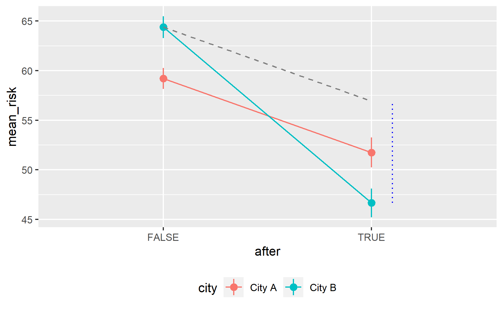
Save the data.
The data works, so let’s get rid of the intermediate columns we don’t need and save it as a CSV file.
did_data_final <- did_data %>%
select(id, year, city, net, malaria_risk)
head(did_data_final)
## # A tibble: 6 × 5
## id year city net malaria_risk
## <int> <dbl> <chr> <lgl> <dbl>
## 1 1 2014 City B FALSE 54.2
## 2 2 2017 City B FALSE 84.1
## 3 3 2017 City A FALSE 37.6
## 4 4 2017 City B FALSE 33.1
## 5 5 2019 City A FALSE 61.1
## 6 6 2017 City B FALSE 59.9# Save data
write_csv(did_data_final, "data/diff_diff.csv")Draw a DAG that maps out how all the columns you care about are related.
Regression discontinuity designs are also based on context instead of models, so the DAG is pretty simple. We’ll keep with our mosquito net example and pretend that families that earn less than $450 a week qualify for a free net. Here’s the DAG:
rdd_dag <- dagify(mal ~ net + inc,
net ~ cut,
cut ~ inc,
coords = list(x = c(mal = 4, net = 1, inc = 3, cut = 2),
y = c(mal = 1, net = 1, inc = 2, cut = 1.75)))
ggdag(rdd_dag) +
theme_dag()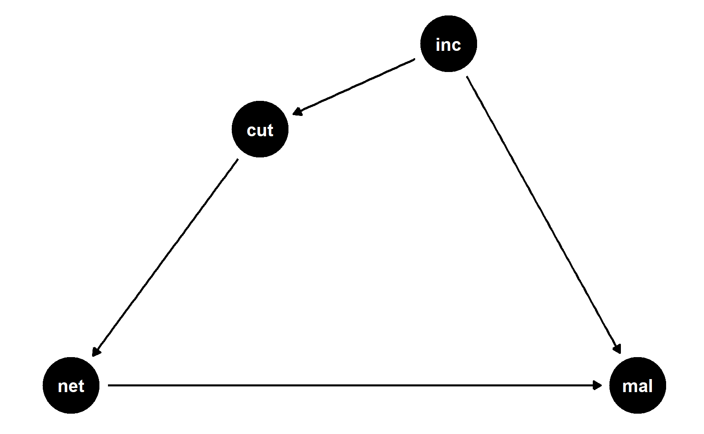
Specify how those nodes are measured.
Here’s how we’ll measure these nodes:
Malaria risk: scale from 0–100, mostly around 60, but ranging from 30ish to 90ish. Best to use a Beta distribution.
Net use: binary 0/1, TRUE/FALSE variable. This is technically binomial, but we don’t need to simulate it since it will only happen for people who below the cutoff.
Income: weekly income, measured in dollars, mostly around 500 ± 300. Best to use a normal distribution.
Cutoff: binary 0/1, below/above $450 variable. This is technically binomial, but we don’t need to simulate it since it is entirely based on income.
Specify the relationships between the nodes based on the DAG equations.
There are three models in the DAG:
cut ~ inc: Being above or below the cutpoint is determined by income. We know the cutoff is 450, so we just make an indicator showing if people are below that.
net ~ cut: Net usage is determined by the cutpoint. If people are below the cutpoint, they’ll use a net; if not, they won’t. We can build in noncompliance here if we want and use fuzzy regression discontinuity. For the sake of this example, we’ll do it both ways, just so you can see both sharp and fuzzy synthetic data.
mal ~ net + inc: Malaria risk is determined by both net usage and income. It’s also determined by lots of other things (age, education, city, etc.), but we don’t need to include those in the DAG because we’re using RDD to say that we have good treatment and control groups right around the cutoff.
We’ll pretend that a 1 dollar increase in income is associated with a drop in risk of 0.01, and that using a mosquito net causes a decrease of 10 points on average. That’s our causal effect.
Generate random columns that stand alone. Generate related columns using regression math. Consider adding random noise. This is an entirely trial and error process until you get numbers that look good. Rely heavily on plots as you try different coefficients and parameters. Optionally rescale any columns that go out of reasonable bounds. If you rescale, you’ll need to tinker with the coefficients you used since the final effects will also get rescaled.
Let’s fake some data! Heavily annotated code below:
# Make this randomness consistent
set.seed(1234)
# Simulate 5441 people (we need a lot bc we're throwing most away)
n_people <- 5441
rdd_data <- tibble(
# Make an ID column (not necessary, but nice to have)
id = 1:n_people,
# Generate income variable: normal, 500 ± 300
income = rnorm(n_people, mean = 500, sd = 75)
) %>%
# Generate cutoff variable
mutate(below_cutoff = ifelse(income < 450, TRUE, FALSE)) %>%
# Generate net variable. We'll make two: one that's sharp and has perfect
# compliance, and one that's fuzzy
# Here's the sharp one. It's easy. If you're below the cutoff you use a net.
mutate(net_sharp = ifelse(below_cutoff == TRUE, TRUE, FALSE)) %>%
# Here's the fuzzy one, which is a little trickier. If you're far away from
# the cutoff, you follow what you're supposed to do (like if your income is
# 800, you don't use the program; if your income is 200, you definitely use
# the program). But if you're close to the cutoff, we'll pretend that there's
# an 80% chance that you'll do what you're supposed to do.
mutate(net_fuzzy = case_when(
# If your income is between 450 and 500, there's a 20% chance of using the program
income >= 450 & income <= 500 ~ sample(c(TRUE, FALSE), n_people, replace = TRUE, prob = c(0.2, 0.8)),
# If your income is above 500, you definitely don't use the program
income > 500 ~ FALSE,
# If your income is between 400 and 450, there's an 80% chance of using the program
income < 450 & income >= 400 ~ sample(c(TRUE, FALSE), n_people, replace = TRUE, prob = c(0.8, 0.2)),
# If your income is below 400, you definitely use the program
income < 400 ~ TRUE
)) %>%
# Finally we can make the malaria risk score, based on income, net use, and
# random noise. We'll make two outcomes: one using the sharp net use and one
# using the fuzzy net use. They have the same effect built in, we just have to
# use net_sharp and net_fuzzy separately.
mutate(malaria_risk_base = rbeta(n_people, shape1 = 4, shape2 = 5) * 100) %>%
# Make the sharp version. There's really a 10 point decrease, but because of
# rescaling, we use 15. I only chose 15 through lots of trial and error (i.e.
# I used -11, ran the RDD model, and the effect was too small; I used -20, ran
# the model, and the effect was too big; I kept changing numbers until landing
# on -15). Risk also goes down as income increases.
mutate(malaria_effect_sharp = (-15 * net_sharp) + (-0.01 * income),
malaria_risk_sharp = malaria_risk_base + malaria_effect_sharp + rnorm(n_people, 0, sd = 3),
malaria_risk_sharp = rescale(malaria_risk_sharp, to = c(5, 70))) %>%
# Do the same thing, but with net_fuzzy
mutate(malaria_effect_fuzzy = (-15 * net_fuzzy) + (-0.01 * income),
malaria_risk_fuzzy = malaria_risk_base + malaria_effect_fuzzy + rnorm(n_people, 0, sd = 3),
malaria_risk_fuzzy = rescale(malaria_risk_fuzzy, to = c(5, 70))) %>%
# Make a version of income that's centered at the cutpoint
mutate(income_centered = income - 450)
head(rdd_data)
## # A tibble: 6 × 11
## id income below_cutoff net_sharp net_fuzzy malaria_risk_base malaria_effect_sharp malaria_risk_sharp malaria_effect_fuzzy malaria_risk_fuzzy income_centered
## <int> <dbl> <lgl> <lgl> <lgl> <dbl> <dbl> <dbl> <dbl> <dbl> <dbl>
## 1 1 409. TRUE TRUE FALSE 56.5 -19.1 38.0 -4.09 47.5 -40.5
## 2 2 521. FALSE FALSE FALSE 26.1 -5.21 28.6 -5.21 27.6 70.8
## 3 3 581. FALSE FALSE FALSE 84.4 -5.81 64.7 -5.81 65.5 131.
## 4 4 324. TRUE TRUE TRUE 32.9 -18.2 25.9 -18.2 23.4 -126.
## 5 5 532. FALSE FALSE FALSE 53.1 -5.32 46.5 -5.32 44.3 82.2
## 6 6 538. FALSE FALSE FALSE 45.7 -5.38 43.2 -5.38 40.2 88.0Verify all relationships with plots and models.
Is there a cutoff in the running variable when we use the sharp net variable? Yep!
ggplot(rdd_data, aes(x = income, y = net_sharp, color = below_cutoff)) +
geom_vline(xintercept = 450) +
geom_point(alpha = 0.3, position = position_jitter(width = NULL, height = 0.2)) +
guides(color = "none")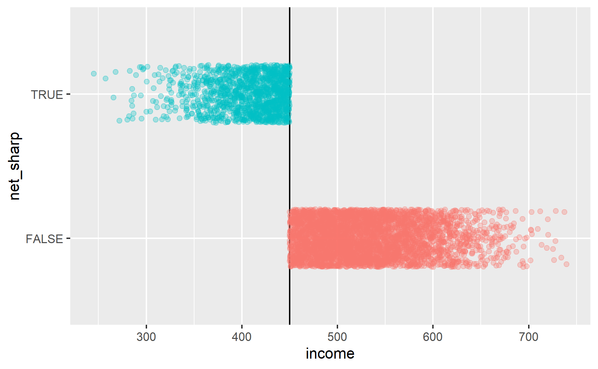
Is there a cutoff in the running variable when we use the fuzzy net variable? Yep! There are some richer people using the program and some poorer people not using it.
ggplot(rdd_data, aes(x = income, y = net_fuzzy, color = below_cutoff)) +
geom_vline(xintercept = 450) +
geom_point(alpha = 0.3, position = position_jitter(width = NULL, height = 0.2)) +
guides(color = "none")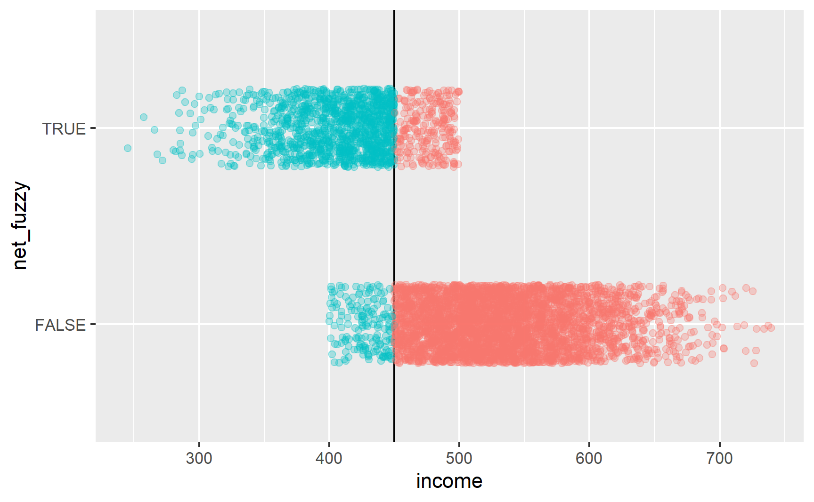
Try it out!
Let’s test it! For sharp RDD we need to use this model:
\[ \text{Malaria risk} = \beta_0 + \beta_1 \text{Income}_\text{centered} + \beta_2 \text{Net} + \varepsilon \]
We’ll use a bandwidth of ±$50, because why not. In real life you’d be more careful about bandwidth selection (or use rdbwselect() from the rdrobust package to find the optimal bandwidth)
ggplot(rdd_data, aes(x = income, y = malaria_risk_sharp, color = net_sharp)) +
geom_vline(xintercept = 450) +
geom_point(alpha = 0.2, size = 0.5) +
# Add lines for the full range
geom_smooth(data = filter(rdd_data, income_centered <= 0),
method = "lm", se = FALSE, size = 1, linetype = "dashed") +
geom_smooth(data = filter(rdd_data, income_centered > 0),
method = "lm", se = FALSE, size = 1, linetype = "dashed") +
# Add lines for bandwidth = 50
geom_smooth(data = filter(rdd_data, income_centered >= -50 & income_centered <= 0),
method = "lm", se = FALSE, size = 2) +
geom_smooth(data = filter(rdd_data, income_centered > 0 & income_centered <= 50),
method = "lm", se = FALSE, size = 2) +
theme(legend.position = "bottom")
## Warning: Using `size` aesthetic for lines was deprecated in ggplot2 3.4.0.
## ℹ Please use `linewidth` instead.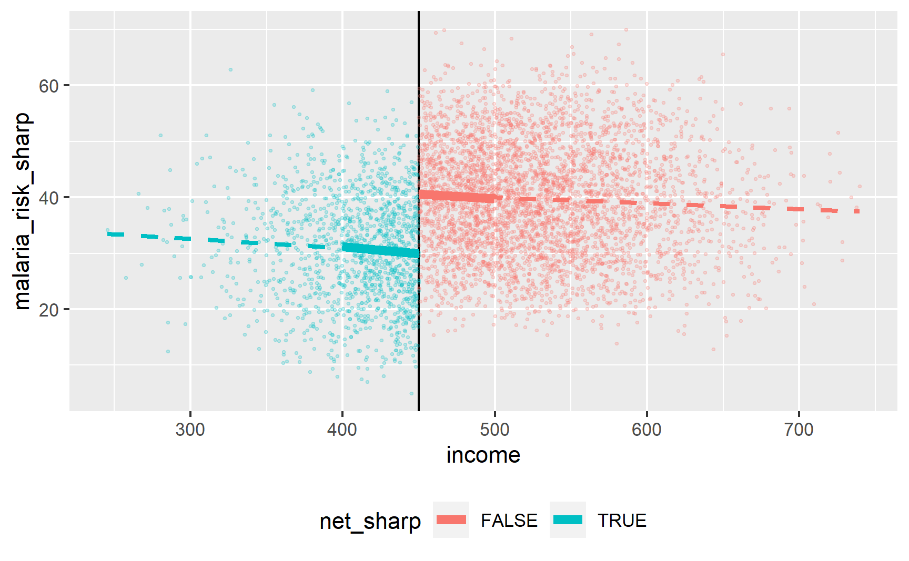
model_sharp <- lm(malaria_risk_sharp ~ income_centered + net_sharp,
data = filter(rdd_data,
income_centered >= -50 & income_centered <= 50))
tidy(model_sharp)
## # A tibble: 3 × 5
## term estimate std.error statistic p.value
## <chr> <dbl> <dbl> <dbl> <dbl>
## 1 (Intercept) 40.7 0.462 88.1 0
## 2 income_centered -0.0197 0.0144 -1.37 1.72e- 1
## 3 net_sharpTRUE -10.6 0.815 -13.0 1.67e-37There’s an effect! For people in the bandwidth, the local average treatment effect of nets is a 10.6 point reduction in malaria risk.
Let’s check if it works with the fuzzy version where there are noncompliers:
ggplot(rdd_data, aes(x = income, y = malaria_risk_fuzzy, color = net_fuzzy)) +
geom_vline(xintercept = 450) +
geom_point(alpha = 0.2, size = 0.5) +
# Add lines for the full range
geom_smooth(data = filter(rdd_data, income_centered <= 0),
method = "lm", se = FALSE, size = 1, linetype = "dashed") +
geom_smooth(data = filter(rdd_data, income_centered > 0),
method = "lm", se = FALSE, size = 1, linetype = "dashed") +
# Add lines for bandwidth = 50
geom_smooth(data = filter(rdd_data, income_centered >= -50 & income_centered <= 0),
method = "lm", se = FALSE, size = 2) +
geom_smooth(data = filter(rdd_data, income_centered > 0 & income_centered <= 50),
method = "lm", se = FALSE, size = 2) +
theme(legend.position = "bottom")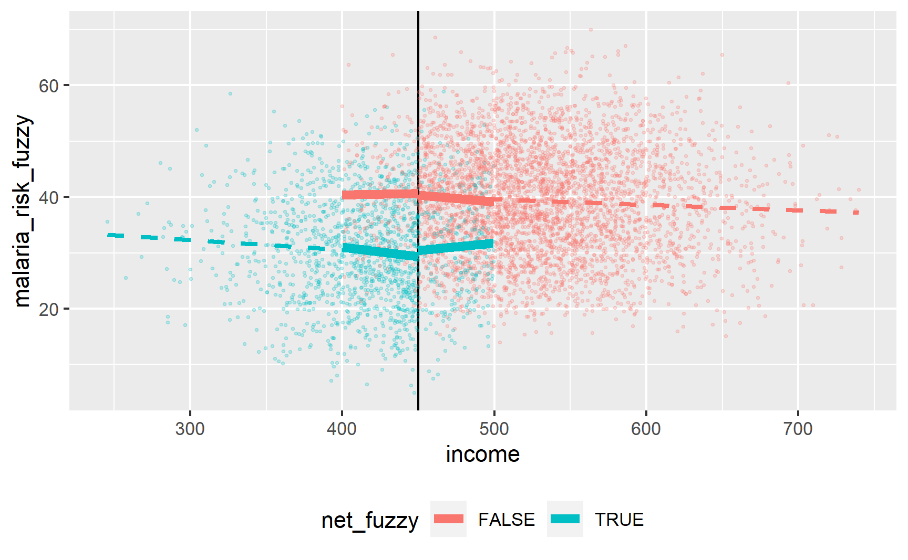
here’s a gap, but it’s hard to measure since there are noncompliers on both sides. We can deal with the noncompliance if we use above/below the cutoff as an instrument (see the fuzzy regression discontinuity guide for a complete example). We should run this set of models:
\[ \begin{aligned} \widehat{\text{Net}} &= \gamma_0 + \gamma_1 \text{Income}_{\text{centered}} + \gamma_2 \text{Below 450} + \omega \\\\ \text{Malaria risk} &= \beta_0 + \beta_1 \text{Income}\_{\text{centered}} + \beta_2 \widehat{\text{Net}} + \epsilon \end{aligned} \]
Instead of doing these two stages by hand (ugh), we’ll do the 2SLS regression with the iv_robust() function from the estimatr package:
library(estimatr)
model_fuzzy <- iv_robust(malaria_risk_fuzzy ~ income_centered + net_fuzzy |
income_centered + below_cutoff,
data = filter(rdd_data,
income_centered >= -50 & income_centered <= 50))
tidy(model_fuzzy)
## term estimate std.error statistic p.value conf.low conf.high df outcome
## 1 (Intercept) 40.73241 0.69045 58.994 0.000e+00 39.37843 42.086402 2220 malaria_risk_fuzzy
## 2 income_centered -0.01921 0.01423 -1.350 1.772e-01 -0.04711 0.008696 2220 malaria_risk_fuzzy
## 3 net_fuzzyTRUE -11.21929 1.31033 -8.562 2.034e-17 -13.78889 -8.649700 2220 malaria_risk_fuzzyThe effect is slightly larger now (−11.2), but that’s because we are looking at a doubly local ATE: compliers in the bandwidth. But still, it’s close to −10, so that’s good. And we could probably get it closer if we did other mathy shenanigans like adding squared and cubed terms or using nonparametric estimation with rdrobust() in the rdrobust package.
Save the data.
The data works, so let’s get rid of the intermediate columns we don’t need and save it as a CSV file. We’ll make two separate CSV files for fuzzy and sharp, just because.
rdd_data_final_sharp <- rdd_data %>%
select(id, income, net = net_sharp, malaria_risk = malaria_risk_sharp)
head(rdd_data_final_sharp)
## # A tibble: 6 × 4
## id income net malaria_risk
## <int> <dbl> <lgl> <dbl>
## 1 1 409. TRUE 38.0
## 2 2 521. FALSE 28.6
## 3 3 581. FALSE 64.7
## 4 4 324. TRUE 25.9
## 5 5 532. FALSE 46.5
## 6 6 538. FALSE 43.2
rdd_data_final_fuzzy <- rdd_data %>%
select(id, income, net = net_fuzzy, malaria_risk = malaria_risk_fuzzy)
head(rdd_data_final_fuzzy)
## # A tibble: 6 × 4
## id income net malaria_risk
## <int> <dbl> <lgl> <dbl>
## 1 1 409. FALSE 47.5
## 2 2 521. FALSE 27.6
## 3 3 581. FALSE 65.5
## 4 4 324. TRUE 23.4
## 5 5 532. FALSE 44.3
## 6 6 538. FALSE 40.2# Save data
write_csv(rdd_data_final_sharp, "data/rdd_sharp.csv")
write_csv(rdd_data_final_fuzzy, "data/rdd_fuzzy.csv")Draw a DAG that maps out how all the columns you care about are related.
As with diff-in-diff and regression discontinuity, instrumental variables are a design-based approach to causal inference and thus don’t require complicated models (but you can still add control variables!), so their DAGs are simpler. Once again we’ll look at the effect of mosquito nets on malaria risk, but this time we’ll say that we cannot possibly measure all the confounding factors between net use and malaria risk, so we’ll use an instrument to extract the exogeneity from net use.
As we talked about in Session 11, good plausible instruments are hard to find: they have to cause bed net use and not be related to malaria risk except through bed net use.
For this example, we’ll pretend that free bed nets are distributed from town halls around the country. We’ll use “distance to town hall” as our instrument, since it could arguably maybe work perhaps. Being closer to a town hall makes you more likely to use a net, but being closer to a town halls doesn’t make put you at higher or lower risk for malaria on its own—it does that only because it changes your likelihood of getting a net.
This is where the story for the instrument falls apart, actually; in real life, if you live far away from a town hall, you probably live further from health services and live in more rural places with worse mosquito abatement policies, so you’re probably at higher risk of malaria. It’s probably a bad instrument, but just go with it.
Here’s the DAG:
iv_dag <- dagify(mal ~ net + U,
net ~ dist + U,
coords = list(x = c(mal = 4, net = 2, U = 3, dist = 1),
y = c(mal = 1, net = 1, U = 2, dist = 1.5)),
latent = "U")
ggdag_status(iv_dag) +
guides(color = "none") +
theme_dag()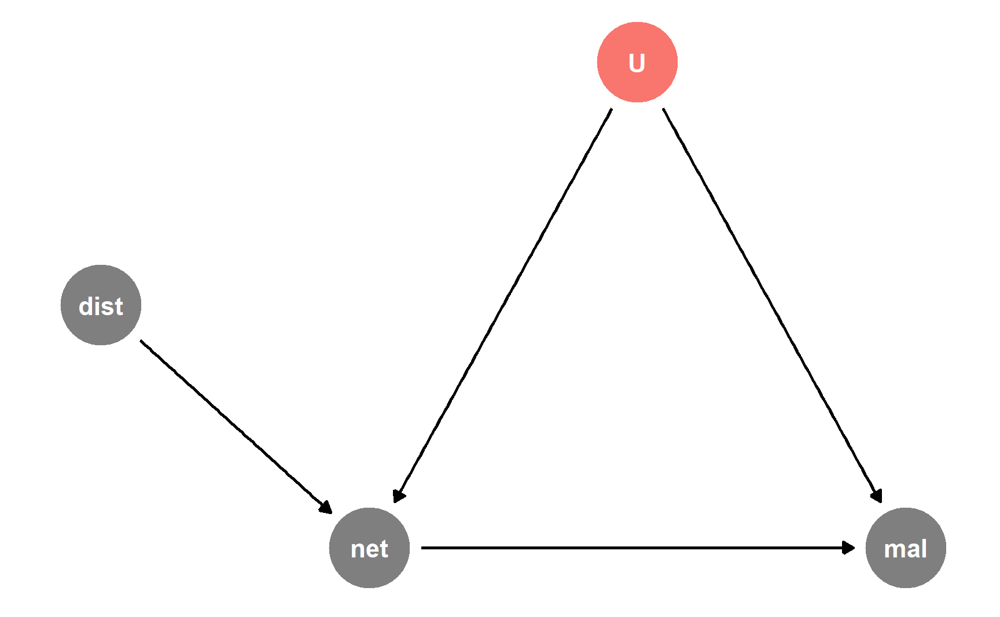
Specify how those nodes are measured.
Here’s how we’ll measure these nodes:
Malaria risk: scale from 0–100, mostly around 60, but ranging from 30ish to 90ish. Best to use a Beta distribution.
Net use: binary 0/1, TRUE/FALSE variable. However, since we want to use other variables that increase the likelihood of using a net, we’ll do some cool tricky stuff with a bed net score, like we did in the observational DAG example earlier.
Distance: distance to nearest town hall, measured in kilometers, mostly around 3, with a left skewed long tail (i.e. most people live fairly close, some people live far away). Best to use a Beta distribution (to get the skewed shape) that we then rescale.
Unobserved: who knows?! There are a lot of unknown confounders. We could generate columns like income, age, education, and health, make them mathematically related to malaria risk and net use, and then throw those columns away in the final data so they’re unobserved. That would be fairly easy and intuitive.
For the sake of simplicity here, we’ll make a column called “risk factors,” kind of like we did with the “ability” column in the instrumental variables example—it’s a magical column that is unmeasurable, but it’ll open a backdoor path between net use and malaria risk and thus create endogeneity. It’ll be normally distributed around 50, with a standard deviation of 25.
Specify the relationships between the nodes based on the DAG equations.
There are two models in the DAG:
net ~ dist + U: Net usage is determined by both distance and our magical unobserved risk factor column. Net use is technically binomial, but in order to change the likelihood of net use based on distance to town hall and unobserved stuff, we’ll do the fancy tricky stuff we did in the observational DAG section above: we’ll create a bed net score, increase or decrease that score based on risk factors and distance, scale that score to a 0-1 scale of probabilities, and then draw a binomial 0/1 outcome using those probabilities.
We’ll say that a one kilometer increase in the distance to a town halls reduces the bed net score and a one point increase in risk factors reduces the bed net score.
mal ~ net + U: Malaria risk is determined by both net usage and unkown stuff, or the magical column we’re calling “risk factors.” We’ll say that a one point increase in risk factors increases malaria risk, and that using a mosquito net causes a decrease of 10 points on average. That’s our causal effect.
Generate random columns that stand alone. Generate related columns using regression math. Consider adding random noise. This is an entirely trial and error process until you get numbers that look good. Rely heavily on plots as you try different coefficients and parameters. Optionally rescale any columns that go out of reasonable bounds. If you rescale, you’ll need to tinker with the coefficients you used since the final effects will also get rescaled.
Fake data time! Here’s some heavily annotated code:
# Make this randomness consistent
set.seed(1234)
# Simulate 1578 people (just for fun)
n_people <- 1578
iv_data <- tibble(
# Make an ID column (not necessary, but nice to have)
id = 1:n_people,
# Generate magical unobserved risk factor variable: normal, 500 ± 300
risk_factors = rnorm(n_people, mean = 100, sd = 25),
# Generate distance to town hall variable
distance = rbeta(n_people, shape1 = 1, shape2 = 4)
) %>%
# Scale up distance to be 0.1-15 instead of 0-1
mutate(distance = rescale(distance, to = c(0.1, 15))) %>%
# Generate net variable based on distance, risk factors, and random noise
# Note: These -40 and -2 effects are entirely made up and I got them through a
# lot of trial and error and rerunning this stupid chunk dozens of times
mutate(net_score = 0 +
(-40 * distance) + # Distance effect
(-2 * risk_factors) + # Risk factor effect
rnorm(n_people, mean = 0, sd = 50), # Random noise
net_probability = rescale(net_score, to = c(0.15, 1)),
# Randomly generate a 0/1 variable using that probability
net = rbinom(n_people, 1, net_probability)) %>%
# Generate malaria risk variable based on net use, risk factors, and random noise
mutate(malaria_risk_base = rbeta(n_people, shape1 = 7, shape2 = 5) * 100,
# We're aiming for a -10 net effect, but need to boost it because of rescaling
malaria_effect = (-20 * net) + (0.5 * risk_factors),
# Make the final malaria risk score
malaria_risk = malaria_risk_base + malaria_effect,
# Rescale so it doesn't go below 0
malaria_risk = rescale(malaria_risk, to = c(5, 80)))
iv_data
## # A tibble: 1,578 × 9
## id risk_factors distance net_score net_probability net malaria_risk_base malaria_effect malaria_risk
## <int> <dbl> <dbl> <dbl> <dbl> <int> <dbl> <dbl> <dbl>
## 1 1 69.8 3.98 -202. 0.766 1 71.1 14.9 36.5
## 2 2 107. 2.14 -284. 0.686 1 75.4 33.5 49.5
## 3 3 127. 5.47 -469. 0.505 0 57.4 63.6 56.4
## 4 4 41.4 9.61 -414. 0.558 0 37.2 20.7 20.4
## 5 5 111. 4.66 -376. 0.596 0 38.5 55.4 40.9
## 6 6 113. 2.29 -284. 0.686 1 75.7 36.3 51.3
## 7 7 85.6 0.922 -215. 0.753 0 28.7 42.8 28.2
## 8 8 86.3 12.5 -608. 0.368 1 50.6 23.2 29.4
## 9 9 85.9 3.11 -267. 0.703 1 38.4 22.9 22.4
## 10 10 77.7 1.35 -157. 0.810 1 69.1 18.9 37.6
## # ℹ 1,568 more rowsVerify all relationships with plots and models.
Is there a relationship between unobserved risk factors and malaria risk? Yep.
ggplot(iv_data, aes(x = risk_factors, y = malaria_risk)) +
geom_point(aes(color = as.factor(net))) +
geom_smooth(method = "lm")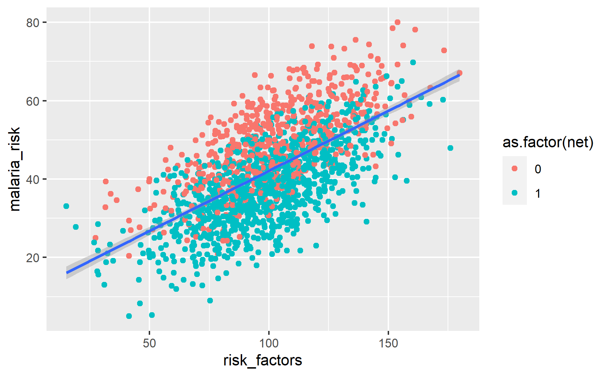
Is there a relationship between distance to town hall and net use? Yeah, those who live further away are less likely to use a net.
ggplot(iv_data, aes(x = distance, fill = as.factor(net))) +
geom_density(alpha = 0.7)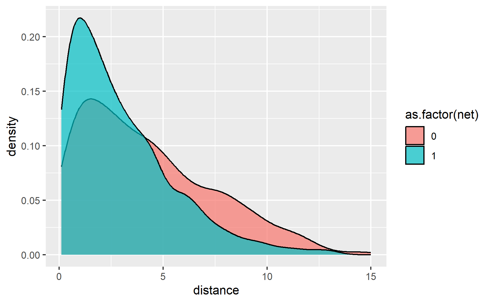
Is there a relationship between net use and malaria risk? Haha, yeah, that’s a huge highly significant effect. Probably too perfect. We could increase those error bars if we tinker with some of the numbers in the code, but for the sake of this example, we’ll leave them like this.
ggplot(iv_data, aes(x = as.factor(net), y = malaria_risk, color = as.factor(net))) +
stat_summary(geom = "pointrange", fun.data = "mean_se")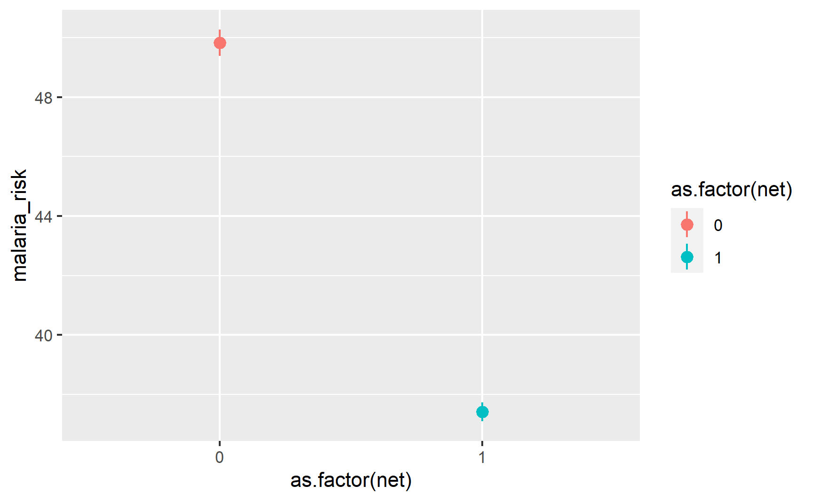
Try it out!
Cool, let’s see if this works. Remember, we can’t actually use the risk_factors column in real life, but we will here just to make sure the effect we built in exists. Here’s the true effect, where using a net causes a decrease of 10.9 malaria risk points
model_forbidden <- lm(malaria_risk ~ net + risk_factors, data = iv_data)
tidy(model_forbidden)
## # A tibble: 3 × 5
## term estimate std.error statistic p.value
## <chr> <dbl> <dbl> <dbl> <dbl>
## 1 (Intercept) 20.6 0.873 23.6 6.98e-106
## 2 net -10.8 0.400 -27.1 3.93e-133
## 3 risk_factors 0.283 0.00788 35.9 1.16e-206Since we can’t actually use that column, we’ll use distance to town hall as an instrument. We should run this set of models:
\[ \begin{aligned} \widehat{\text{Net}} &= \gamma_0 + \gamma_1 \text{Distance to town hall} + \omega \\\\ \text{Malaria risk} &= \beta_0 + \beta_1 \widehat{\text{Net}} + \epsilon \end{aligned} \]
We’ll run this 2SLS model with the iv_robust() function from the estimatr package:
library(estimatr)
model_iv <- iv_robust(malaria_risk ~ net | distance, data = iv_data)
tidy(model_iv)
## term estimate std.error statistic p.value conf.low conf.high df outcome
## 1 (Intercept) 47.202 1.576 29.95 2.344e-156 44.11 50.294 1576 malaria_risk
## 2 net -8.236 2.474 -3.33 8.889e-04 -13.09 -3.385 1576 malaria_risk…and it’s relatively close, I guess, at −8.2. Getting instrumental variables to find exact causal effects is tricky, but I’m fine with this for simulated data.
Save the data.
The data works well enough, so we’ll get rid of the extra intermediate columns and save it as a CSV file. We’ll keep the forbidden risk_factors column just for fun.
iv_data_final <- iv_data %>%
select(id, net, distance, malaria_risk, risk_factors)
head(iv_data_final)
## # A tibble: 6 × 5
## id net distance malaria_risk risk_factors
## <int> <int> <dbl> <dbl> <dbl>
## 1 1 1 3.98 36.5 69.8
## 2 2 1 2.14 49.5 107.
## 3 3 0 5.47 56.4 127.
## 4 4 0 9.61 20.4 41.4
## 5 5 0 4.66 40.9 111.
## 6 6 1 2.29 51.3 113.# Save data
write_csv(iv_data_final, "data/bed_nets_iv.csv")There are several R packages that let you generate synthetic data with built-in relationships in a more automatic way. They all work a little differently, and if you’re interested in trying them out, make sure you check the documentation for details.
The fabricatr package is a very powerful package for simulating data. It was invented specifically for using in preregistered studies, so it can handle a ton of different data structures like panel data and time series data. You can build in causal effects and force columns to be correlated with each other.
fabricatr has exceptionally well-written documentation with like a billion detailed examples (see the right sidebar here). This is a gold standard package and you should most definitely check it out.
Here’s a simple example of simulating a bunch of voters and making older ones more likely to vote:
library(fabricatr)
set.seed(1234)
fake_voters <- fabricate(
# Make 100 people
N = 100,
# Age uniformly distributed between 18 and 85
age = round(runif(N, 18, 85)),
# Older people more likely to vote
turnout = draw_binary(prob = ifelse(age < 40, 0.4, 0.7), N = N)
)
head(fake_voters)
## ID age turnout
## 1 001 26 0
## 2 002 60 1
## 3 003 59 1
## 4 004 60 1
## 5 005 76 1
## 6 006 61 1And here’s an example of country-year panel data where there are country-specific and year-specific effects on GDP:
set.seed(1234)
panel_global_data <- fabricate(
years = add_level(
N = 10,
ts_year = 0:9,
year_shock = rnorm(N, 0, 0.3)
),
countries = add_level(
N = 5,
base_gdp = runif(N, 15, 22),
growth_units = runif(N, 0.25, 0.5),
growth_error = runif(N, 0.15, 0.5),
nest = FALSE
),
country_years = cross_levels(
by = join_using(years, countries),
gdp_measure = base_gdp + year_shock + (ts_year * growth_units) +
rnorm(N, sd = growth_error)
)
) %>%
# Scale up the years to be actual years instead of 1, 2, 3, etc.
mutate(year = ts_year + 2010)
head(panel_global_data)
## years ts_year year_shock countries base_gdp growth_units growth_error country_years gdp_measure year
## 1 01 0 -0.36212 1 17.22 0.4526 0.3096 01 17.07 2010
## 2 02 1 0.08323 1 17.22 0.4526 0.3096 02 17.55 2011
## 3 03 2 0.32533 1 17.22 0.4526 0.3096 03 18.72 2012
## 4 04 3 -0.70371 1 17.22 0.4526 0.3096 04 17.99 2013
## 5 05 4 0.12874 1 17.22 0.4526 0.3096 05 19.25 2014
## 6 06 5 0.15182 1 17.22 0.4526 0.3096 06 19.63 2015ggplot(panel_global_data, aes(x = year, y = gdp_measure, color = countries)) +
geom_line() +
labs(x = "Year", y = "Log GDP", color = "Countries")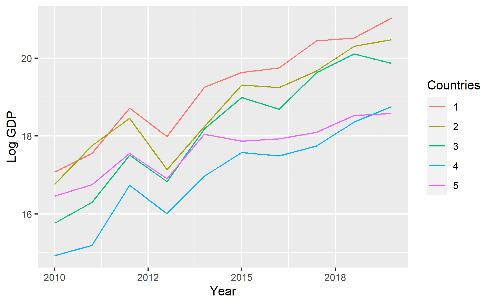
That all just scratches the surface of what fabricatr can do. Again, check the examples and documentation and play around with it to see what else it can do.
The wakefield package is jokingly named after Andrew Wakefield, the British researcher who invented fake data to show that the MMR vaccine causes autism. This package lets you quickly generate random fake datasets. It has a bunch of pre-set column possibilities, like age, color, Likert scales, political parties, religion, and so on, and you can also use standard R functions like rnorm(), rbinom(), or rbeta(). It also lets you create repeated measures (1st grade score, 2nd grade score, 3rd grade score, etc.) and build correlations between variables.
You should definitely look at the documentation to see a ton of examples of how it all works. Here’s a basic example:
library(wakefield)
set.seed(1234)
wakefield_data <- r_data_frame(
n = 500,
id,
treatment = rbinom(1, 0.3), # 30% chance of being in treatment
outcome = rnorm(mean = 500, sd = 100),
race,
age = age(x = 18:45),
sex = sex_inclusive(),
survey_question_1 = likert(),
survey_question_2 = likert()
)
head(wakefield_data)
## # A tibble: 6 × 8
## ID treatment outcome Race age sex survey_question_1 survey_question_2
## <chr> <int> <dbl> <fct> <int> <fct> <ord> <ord>
## 1 001 0 544. White 35 Intersex Disagree Agree
## 2 002 0 606. White 38 Male Disagree Strongly Disagree
## 3 003 0 545. White 38 Female Neutral Strongly Agree
## 4 004 0 566. Black 45 Female Strongly Agree Disagree
## 5 005 1 386. Black 41 Male Disagree Agree
## 6 006 0 463. Hispanic 20 Female Disagree AgreeThe faux package does some really neat things. We can create data that has built-in correlations without going through all the math. For instance, let’s say we have 3 variables A, B, and C that are normally distributed with these parameters:
We want A to correlate with B at r = 0.8 (highly correlated), A to correlate with C at r = 0.3 (less correlated), and B to correlate with C at r = 0.4 (moderately correlated). Here’s how to create that data with faux:
library(faux)
set.seed(1234)
faux_data <- rnorm_multi(n = 100,
mu = c(10, 5, 20),
sd = c(2, 1, 5),
r = c(0.8, 0.3, 0.4),
varnames = c("A", "B", "C"),
empirical = FALSE)
head(faux_data)
## A B C
## 1 11.742 5.612 25.89
## 2 9.060 4.177 18.79
## 3 9.373 4.466 14.57
## 4 10.913 5.341 31.88
## 5 8.221 4.039 18.14
## 6 10.095 4.517 17.43
# Check averages and standard deviations
faux_data %>%
# Convert to long/tidy so we can group and summarize
pivot_longer(cols = everything(), names_to = "variable", values_to = "value") %>%
group_by(variable) %>%
summarize(mean = mean(value),
sd = sd(value))
## # A tibble: 3 × 3
## variable mean sd
## <chr> <dbl> <dbl>
## 1 A 10.2 2.08
## 2 B 5.02 1.00
## 3 C 20.8 5.01
# Check correlations
cor(faux_data$A, faux_data$B)
## [1] 0.808
cor(faux_data$A, faux_data$C)
## [1] 0.301
cor(faux_data$B, faux_data$C)
## [1] 0.4598faux can do a ton of other things too, so make sure you check out the documentation and all the articles with examples here.